第二十届全国大学生软件创新大赛 —— 面向移动终端的系统级智能体验
2026 年 11 月
摘要
本文把长期陪伴 AI 拆成三层：动力学内核负责”什么时候、为什么”，表达层负责”怎么说”，生活任务层负责”事情办到哪一步”。系统以六分量状态 z(t)=[e(t),a(v,t),θ(t),ψ,u(t),g(t)] 为核心，用情绪场、图谱扩散、Hebbian 边权、念头累积、自我调节与慢演化构成闭环；把”念头越阈”改为”越阈且自我许可”，让每个主动行为都能回溯到由头。生活任务层把短信快递做成”发现—确认—排期—提醒—回执—归档”状态机，快递提醒走确定性通道，不进入念头阈值。本文给出 20 章结构、14 组数值检查、12 条注册行为与 51 个工具的实现口径；记忆库按艾宾浩斯保持率分桶衰减（事实 15 天 / 事件 30 天 / 核心 90 天），稳定度由重要度自评、情绪峰值与跨天复习次数共同决定，归档只在 3/7/15 天三个体检日发生且只移不删；会话层支持群聊按人隔离、内核仍保持单一自我（长期事实层的发送者字段尚未落入，464 条实测无一记录 speaker，本文如实标注这一缺口并在 11.9 说明改造路径）；短上下文再做三处闭合（语音自述补记入史、指代焦点实体落盘、打断前抢救半截回复）；隐私披露改为在注入层确定性过滤，并按问题性质分四档回答；文末如实标注手机端未打通、多用户独立心智未实现与仿真外部效度边界，并对 1200 条真实对话 / 464 条事实做逐条核查，把阻断率、召回率与唯一一条 shared 分开报告。
关键词：数字生命；耦合动力学；人格心理学；主动行为；生活任务；一致性守护
主流陪伴 AI 把情绪、动机、人格全部交给大模型隐状态：同一句话，换一个会话就可能换一种心情；主动行为由提示词或定时器触发，既不可控，也不可解释。识海把”什么时候说话、为什么说话”从语言生成中拆出来，交给一个独立的时序状态系统；大模型只负责”怎么说”。
这条分界线带来三个直接后果：情绪可以跨会话残留，记忆可以按情感强度差异化衰减，每一个自发动作都能回溯到具体的情绪、记忆、念头或任务来源。本文把这条链路整理成 20 章：先给原理与方程，再给架构与任务，最后给仿真与结论。
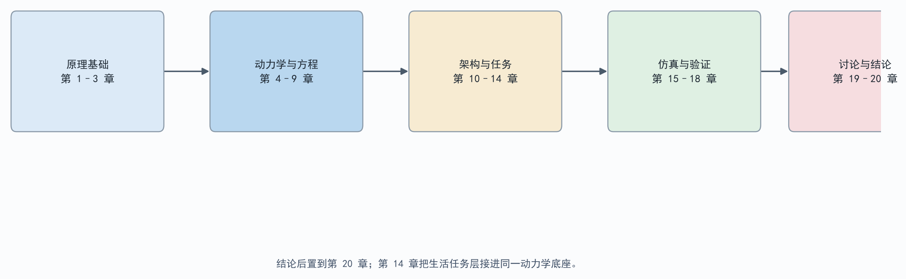
图 1-1 20 章结构：原理—架构—方程—仿真—结论
第 2—3 章定义问题与状态空间；第 4—9 章给出情绪、记忆、人格、念头、目标与演化的方程；第 10—14 章给出动作空间、系统架构、表达层、一致性守护与生活任务层；第 15—18 章给出仿真设置、数值结果、长时稳定与真实场景验证；第 19—20 章讨论边界并收束结论。结论不再夹在中间，统一放到第 20 章。
（1）提出六分量耦合状态
z(t)=[e,a,θ,ψ,u,g]，把情绪场、图谱激活、慢参数、人格、念头与目标写在同一组方程里；（2）把”念头越阈”改为”越阈且自我许可”，用
EgoRegulator 解释”为什么现在说”；（3）把 12 条注册行为与 51 个 LLM
工具收进同一张动作表，形成 63
个可解释调用入口；（4）新增生活任务层，把短信快递、排期、提醒、确认、归档做成确定性状态机，并与心理动力学共用同一份状态快照；（5）用
14
组数值检查与真实运行日志验证链路自洽，同时如实标注外部效度边界；（6）在架构层给出会话隔离与记忆作用域：短上下文按会话分桶、内核保持单一自我，并用同会话新消息取消旧回复任务消除时序压栈；长期事实的归属层设计目标与实际落地之间的缺口（sender
只存在于采集层、未落入事实层，subject 与 owner
各自去重后仅为 1）在 11.9 与 18.6
逐条核实，并据此给出四元组改造路径；（7）给出短上下文的闭合机制：语音自述在发送结束后补记入史、指代焦点实体落盘跨重启绑定、打断前抢救半截回复，并指出”整段覆盖写
+
钩子时序”这一框架级落库根因；（8）提出一种把隐私披露判据从生成侧前移至注入层的过滤架构：模型看到的上下文不含不该被当前对象看到的事实，因此”不能泄露”成为结构约束而非提示词遵从；须同时说明其可行性以记忆归属信息完整为前提——当前实现中
speaker 未落入事实层（详见 11.9），真实数据
scope 分布为 463:1（详见
18.6），故该架构在真实数据上不能单独验证有效性，正例验证留待合成数据集（详见
18.6.6）。此外给出隐私追问门的四档回答策略（确认是否泄漏时可诚实答”没有”、打探内容时模糊化转移、假装知道时反问来源）与”确定性只在注入层”的边界声明；（9）给出表达层的语片双模式：判据在本地按情绪
z 分数量、时间压力与安慰情境计算，free
时替换而非叠加分条编排指令，再以连发密度与句尾未闭合两条判据回答”主动开口会不会抢话”，并说明为何不能依赖”对方正在输入”（适配器无
typing 事件）；（10）对真实运行数据做逐条核查并据此收窄主张：13.7 天
1200 条对话成立、群聊仅占 2.4%、464 条事实的 subject 去重为
1、有效谓词为 0、speaker 在采集层完整而事实层缺失，并阐明”阻断率
100%“这一说法为何不成立。
给定用户消息流 X={x1,…,xn}、历史交互记忆 M={(xi,yi,ti)}、以及情境 C（时间、课表、地点、短信、设备状态），要求构建系统 f:(X,M,C)→(Y,e,a,T)，其中 Y 为回复序列，e(t) 为连续情绪状态，a(v,t) 为记忆激活状态，T 为生活任务状态。系统需要同时满足四条约束：
（a）情绪连续性：e(t) 不随单轮对话跳变，跨会话保留残留；（b）记忆可累积：新交互写入图谱，旧记忆按情感强度差异化衰减；（c）行为可解释：每个自发动作可回溯到情绪、记忆、念头或任务来源；（d）记忆零 LLM 成本：检索与衰减不调用大模型。生活任务层再追加一条（e）任务可闭环：发现、确认、排期、提醒、回执、归档六个环节都不丢状态。
f:(X,M,C)→(Y,e,a,T) （2-1）
现有方案大多是”强 LLM + Prompt + 向量记忆”：情绪靠提示词维持，记忆靠全量嵌入检索，主动行为靠定时器。它们能生成像样的句子，但很难回答三个问题：为什么此刻主动？为什么是这件事？为什么不是下一次？识海的差异是把动机、情绪、记忆与任务状态做成可读的时序变量，把语言生成降为表达层。
本文不宣称系统具备意识或主观体验。心理学概念只作为设计动机的来源，不作为系统模块名：论文中的”快动力学内核、门控调节器、硬安全守护”分别对应情绪/记忆/念头、释放许可、I1–I4 守护；代码与接口不按”本我—自我—超我”命名。当前版本是单用户设计：私聊天然一人一会话，群聊在 unique_session 下把会话键改为”发送者_群号”，不同群友的短上下文互不可见；长期事实记忆以发送者为键、跨会话共享（该键是设计意图，事实层尚未填入发送者，见 11.9）；内核 z(t) 与图谱仍是单一自我，只对用户会话开放读写。多用户各自独立心智、多平台实例与手机独立端仍未实现。仿真只证明数值自洽性与边界行为，不证明线上因果效应；真实场景验证以本机 AstrBot 运行日志与任务状态文件为准。
本文的建模不是从零构造，而是从六个已有理论里各截取一部分，改写成可计算的时序变量。取舍标准不是”理论完整”，而是两条：其一，能否落成不调用大模型的确定性更新（指数衰减、加权求和、阈值比较、计数）；其二，被截取的那部分能否对应到系统中一个可观测的量。以下逐条说明每个理论被用到的部分、形式化落点，以及有意放弃的部分——放弃的部分写清楚，是为了避免把”借用了某个理论的名字”当成”实现了那个理论”。
这一节另有一条总声明，适用于全篇：文中出现的心理学术语（防御、压抑、置换、投射、记忆干扰等）均作功能类比使用，其工程定义以第 6 章表 6-1 的触发条件与输出行为为准，不构成本我/自我/超我的模块划分，也不能反过来用于推断用户的心理状态。
人类记忆的保持量随时间近似指数下降，而复习与重要、高情绪的事件抬高了初始强度。本文借用的是它的函数形式而非实验结论：保持率写为式（5-3）的 R(Δt) = exp(−λ·Δt / S)，λ 是分桶基础衰减率（单位 h⁻¹，见式 5-5），S 是式（5-4）给出的无量纲强度倍数；两者配合之后指数里才不出现时间单位。记忆强度写为式（5-4）的三因子乘积 S = (1 + β·imp)(1 + αE·Ev)(1 + βN·Nrecall)，三个因子分别对应”这条有多重要”（imp，固结时 LLM 自评）、“当时情绪多重”（E_v，事件冻结时的情绪峰值）、“后来被想起过几次”（N_recall，跨天有效复习计数）。它回答的问题是”这条还记不记得”，服务于天级到月级的条目淘汰与召回排序。
边界有两条。第一，原曲线来自无意义音节的实验室遗忘，本文不主张它精确描述语义记忆。第二，三桶半衰期（事实 15 天 / 事件 30 天 / 核心 90 天，表 5-1）是工程标定值，不是测量值；标定目标是”长期陪伴”而非”快速遗忘”，理由已在 5.3 说明。
“同时被激活的连接会增强”，且激活可以沿已有的连接扩散。式（5-6）给出边权增量，式（5-1）给出激活更新：每个节点的新激活 = 自身衰减后的剩余 + 邻居经边权传来的能量。它承担的不是”多一条召回通道”，而是召回的形状——从种子节点沿边扩散，使结果是一串相关的记忆而不是互不相干的 top-k 切片。
边界：扩散只沿已有边进行，全程不调用大模型；本文不对扩散结果做因果承诺，边只表示共现或关联（5.4 已说明代码中不存在可调用的因果判定器）。
新旧记忆会相互压制，也可能被错误拼接。后者在心理学里对应来源混淆（source confusion，也称联想干扰），而不是记忆错构——confabulation 特指对记忆空缺的虚构填补，本文不用这个词（理由见 5.4）。这一条在本系统里没有被实现成”再加一个遗忘项”，而是变成边的准入约束：门一要求两个节点的发送者相同，否则不连边，属于硬约束而非权重折扣；门二对同一主体 24 小时内、尚未被反复共现确立的边只加 γ·0.2（5.4）。
它的作用是防错构——避免把 A 的事安到 B 身上，而不是提升召回率。边界在 5.4 已写明：门二降低假阳性，不保证因果正确。
情绪不是离散标签，每一维有自己的弛豫时间，且各维之间存在互激励。式（4-1）把它写成六维一阶常微分方程，τi 给出各维的消退时长（表 4-1：愤怒 2 小时、恐惧 3 小时、爱意 24 小时），W 描述情绪之间的共鸣。它保证的是情绪跨轮、跨会话保留残留，而不是被单句话重置。
边界：W 采用对称假设以保留梯度流解释，非对称情形未作稳定性证明，只在对称假设下给出数值检查（4.3）。
冲动足够强不等于此刻该表达，中间存在一层调节。本文把它落成式（6-3）的释放许可 rrelease > ρ 与式（6-4）的阈值抬升：高位放行、低位拦截、抑制条件居中。这层调节的价值在于把”该不该说、以什么策略说”从语言模型手中拿走，交给确定性规则引擎，回答”为什么此刻主动、为什么不是下一次”。
边界：本文只借用”调节”这一功能结构，不采用本我/自我/超我的模块划分，代码与接口均不如此命名（2.3）；表 6-1 的四种机制是可观测的参数动作，不是心理学诊断，也不能反过来用于推断用户的心理状态。
人格是相对稳定的特质，不因单次事件整体反转。ψ = (O,C,E,A,N)（归一到 [0,1]）在系统中是月级慢变量，只调制参数、不直接决定文本，实际只有两处进入更新方程：N 缩放情绪弛豫时间（式 6-1）并切换抑制档位，E 缩放念头累积速率（式 6-2）。它的作用是让单轮对话不能改写人设：一轮负反馈最多改变参数，不能推翻人格。
边界：开放性、尽责性、宜人性目前在状态里保留，但尚未进入更新方程，本文不宣称它们有调制作用；“高外向更主动、高神经质恢复更慢”是参数化的设计选择，未经人群标定。
六个理论的共同落点可以归纳成一句：它们都能写成不含大模型的确定性更新，这正是 2.2 所说”把动机、情绪、记忆做成可读时序变量”的技术前提。反过来，凡是必须调用大模型才能判定的量——语义相似、重要度、因果——本文都显式标注为代理指标，而不是理论结论。
系统状态由六个分量构成。快状态承载”此刻的心情与记忆”，慢状态承载”长期的性格与目标”，念头与任务状态负责”是否行动、行动到哪一步”。
z(t)=[e(t)∈R6, a(v,t)∈R|V|, θ(t)∈Rd, ψ∈R5, u(t)∈R, g(t)∈R4] （3-1）
表 3-1 状态分量与时间尺度
| 分量 | 含义 | 取值范围 | 时间尺度 |
|---|---|---|---|
| e(t) | 六维情绪场：happy/sad/angry/fear/love/surprise | [0,1] | 小时级 |
| a(v,t) | 图谱节点激活 | [0,1] | 小时—天级 |
| θ(t) | 慢参数：阈值、衰减、边先验 | 实数 | 天—周级 |
| ψ | 大五人格 (O,C,E,A,N) | [0,1] | 月级 |
| u(t) | 念头强度 | [0,3] | 小时级 |
| g(t) | 关系/记忆/自我/回避四目标 | [0,1] | 天—周级 |
快状态每轮更新，慢状态按天或按周更新，人格按月漂移。三层时间尺度分开的好处是：单轮对话不会把人格带偏，长期反馈也不会被一次情绪淹没。图 3-1 给出六个分量之间的五条回路。
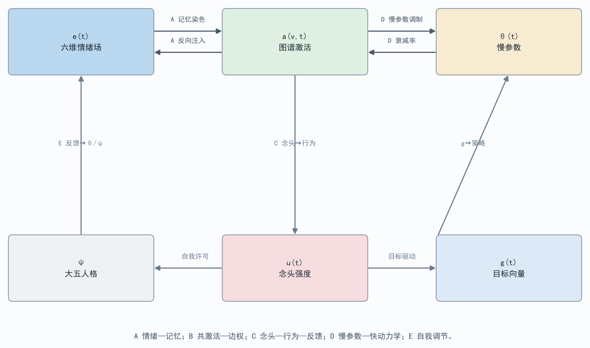
图 3-1 六个状态分量与五条耦合回路
情绪采用小时为时间单位，弛豫时间 τ 均大于 0.5 h，显式欧拉更新满足 |1-1/τ|<1，不会数值振荡。念头 u(t) 是累积量，上界 3.0 是”强度上界”，不是变化率上界；阈值 2.10 与 u(t) 同量纲。任务时间用绝对时间戳，避免跨天漂移。
每一维情绪独立弛豫，同时受外部刺激、内部记忆刺激与情绪互激励影响。
τi·dei/dt = -ei + κ·[sext,i + sint,i] + η·ΣjWijej （4-1）
τ_i 是第 i 维情绪的弛豫时间；-e_i 是自然衰减；s_ext 来自用户输入或语音情绪；s_int 来自被召回的记忆节点；W 是 6×6 情绪互激励矩阵，采用对称假设以保留梯度流解释。
这里必须先交代这组方程管到哪一步：式（4-1）只描述”情绪怎么变”，不描述”情绪怎么变成一句话”。情绪要经过念头与阈值两道接口才影响行为——念头 u(t) 的累积速率由兴趣、时机与情绪状态共同决定（式 7-1），此刻是否开口由 u(t) 与有效阈值 eff_thr 的比较决定（式 7-2）。情绪在这条链条上的位置是”改变 u 的增速”与”参与阈值抬升”，不是直接触发发送。因此答辩里最常被问的”情绪变了之后她怎么决定要不要说话”，答案在式（7-1）与（7-2）而不在式（4-1）。反过来也要纠正一种常见写法：把阈值写成 du/dt 里的减项（τ_u·du/dt = −u + g(e,a) − θ）是错的，本系统的 u 没有这一项，θ 是比较对象，不进入累积方程。
表 4-1 情绪弛豫时间与工程含义
| 维度 | τ（小时） | 工程含义 |
|---|---|---|
| happy | 6 | 开心退得较快，避免一直亢奋 |
| sad | 12 | 低落有残留，但不跨周 |
| angry | 2 | 愤怒最短，避免累积成冲突 |
| fear | 3 | 恐惧中等，给安全感留窗口 |
| love | 24 | 亲密感最长，跨天保持 |
| surprise | 1 | 惊讶最短，避免噪声 |
先把本章的数值可行性与数据使用边界说清楚。 第 4—5
章的 ODE 与衰减系统在 16 章通过 14 组数值检查验证自洽性，在 17 章通过
200
小时长时推进验证稳定性；但自洽性不等于外部效度——本系统未做真人对照实验，仿真结果不能外推为线上效果。同理，真实运行数据（13.7
天 / 1200 条对话 / 464
条事实）在本研究中承担的是参数标定、存在性证明与现象供给三项功能，不承担主实验角色：其
scope 分布为
463:1（private:shared），无法构造泄漏率的正负例平衡集，主验证须在合成数据集上完成（论证见
18.6.6）。这条声明放在这里而不是文末，是因为它决定了后续所有关于确定性与泄露率的结论该被怎样读。
内部刺激 s_int,i=Σ a(v,t)·E_v,i，其中 E_v,i 是节点 v 在第 i 维情绪上的标签强度。被召回的高情感节点会给当前心情”染色”：想起往事，往事又影响当下。该式与第 5 章扩散激活共用同一份 a(v,t)，不需要额外检索。
当外部刺激为 0 时，e(t) 按指数回到 0；当刺激持续饱和时，e(t) 被 W 与 κ 限制在 [0,1] 内。本文不对 W 的非对称情形做稳定性证明，只在对称假设下给出数值检查；这一限制在第 19 章如实标注。
陪伴场景需要的不是”相似段落”，而是”这条记忆和谁一起被想起、想起后情绪怎么变”。扁平向量库只返回 top-k 相似项，无法表达共激活、边权与情感衰减。识海用神经图谱：节点是事实、情绪、事件、语录、高亮，边是共现或因果关系。
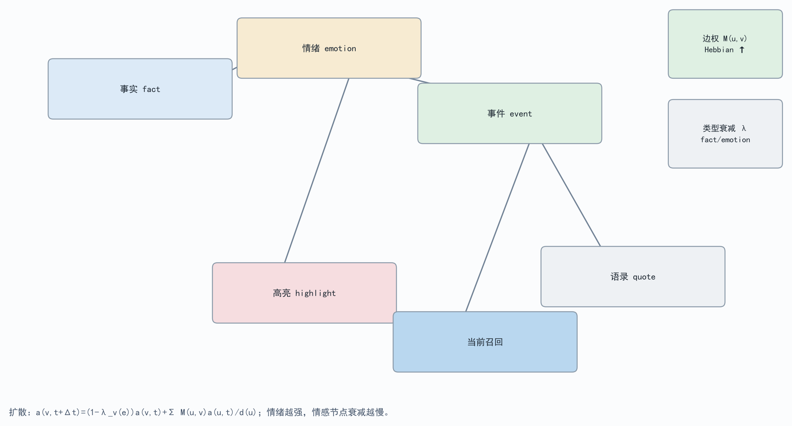
图 5-1 神经图谱的扩散激活与双衰减
每个节点的激活值 = 自身衰减后的剩余 + 邻居通过边权传来的能量。
a(v,t+Δt) = (1-λv(e))·a(v,t) + Σu∈N(v) M(u,v)·a(u,t)/d(u) （5-1）
N(v) 是指向 v 的邻居集合，M(u,v) 是边权，d(u) 是出度。扩散只沿已有边进行，不调用 LLM；召回结果只把节点摘要送进意图包，不把全文塞进提示词。
式 5-1 写作离散形式便于阅读，仿真与实现里衰减项用精确指数 exp(−λv·Δt) 代替 (1−λv·Δt)：后者在步长变化时会系统性漂移，同一组参数换个步长曲线就变形（§3.3）。
系统里有两种”忘记”，物理含义不同，不能共用一个衰减常数。
第一套是图谱节点激活 a(v,t)：它是”此刻这条记忆有多亮”，秒级到小时级。它的衰减率受当前主导情绪与节点情感强度共同调制：
λv(e) = λtype / (1 + α·edom·Ev) （5-2）
λ_type 由节点类型决定（fact=0.1，emotion=0.01，event=0.05，highlight=0.005）；α=3.0；e_dom=max(e(t))。物理含义：开心时美好记忆衰减更慢，低落时负向记忆保留更久——情绪反向调制记忆，而不是记忆单向决定情绪。
第二套是记忆库条目的保持率：事实与事件条目回答的是”这条东西还记不记得”，天级到月级。它不再用”每步乘一个衰减系数”，而是艾宾浩斯保持率曲线：
R(Δt) = exp(−λ·Δt / S) （5-3）
R∈(0,1] 是保持率，Δt 以小时计，λ 是该桶的基础衰减率（单位 h⁻¹，见式 5-5）。这里必须把量纲写死：S 是三因子相乘得到的无量纲强度倍数，不是时间；只有 λ 带时间单位，指数里才不会冒出”小时”。早期稿写作 R=exp(−Δt/S)，字面上 Δt/S 的量纲就是小时，是错的；下文式（5-5）的 λ_eff = λ/S 才是与式（5-3）自洽的形式。S 由三个因子相乘决定：
S = (1 + β·imp)·(1 + αE·Ev)·(1 + βN·Nrecall) （5-4）
β=2.0 是重要度系数（imp 为固结时 LLM 自评的 0–1 重要度，见 5.6）；α_E=2.0、E_v 是事件冻结时的情绪峰值（事实层没有独立情绪字段，此处退化为 1）；β_N=1.5、N_recall 是”跨天有效复习次数”，上限 12（见 5.8）。
换算成衰减率就是 λ_eff = λ/S，其中基础衰减率按类型分桶：
λ = ln2 / (T½·24) （5-5）
T½ 是各桶的基础半衰期，单位为天。三桶标定见表 5-1。
表 5-1 记忆库的分桶半衰期与”温和档”理由
| 桶 | T½（天） | λ（h⁻¹） | 标定理由 |
|---|---|---|---|
| 事实 fact | 15 | 1.93×10⁻³ | 具体事实半个月不提就该淡；再 短就是短期工作记忆 |
| 事件 event | 30 | 9.63×10⁻⁴ | 事件带情境，比纯事实更值得 留，一个月是”还记得那天”的 量级 |
| 核心 core | 90 | 3.21×10⁻⁴ | 身份、承诺、关系锚点：三个月 不提也仍在，但不再是永久 |
这个标定是”长期陪伴”而不是”阿尔茨海默”：如果事实半衰期取 3 天，上周末说的重要事这周三就全忘了。反过来，纯常数衰减也有问题——所有记忆同时同速淡出，说不清”为什么这条记得、那条忘了”。分桶加 S 的组合让差异来自三件可解释的事：这条有多重要（imp）、当时情绪多重（E_v）、后来被想起过几次（N_recall）。
两个节点在同一窗口内被同时点亮，边权增强；夜间梦境固化时修剪弱边。
M(u,v) ← M(u,v) + γ·𝟙[a(u)>θact]·𝟙[a(v)>θact] （5-6）
朴素的”一起亮就连边”会造成来源混淆（source confusion，也称联想干扰 associative interference）：前摄抑制与倒摄抑制说明，新记忆会干扰旧记忆，旧记忆也会压制新记忆。这里不采用”记忆错构（confabulation）“这个说法——confabulation 在心理学里特指对记忆空缺的虚构填补（多见于神经损伤病例），不是”把两条真实记忆错误连边”，套用属于概念位移。如果两个事件节点时间贴得很近但属于不同主体（“用户抱怨的 A”与”机器人自己说的 B”），一旦连边，它们就会在后续召回里被拼成一句”我记错了”。因此实现里加了两道门：
门一，跨主体硬门：sender_u != sender_v
直接不连。这是硬约束，不是权重折扣。
门二，时间邻近惩罚：同一主体、两个节点创建时间相差 24h 以内，且这条边还没被反复共现确立过（共现次数 <3）时，本次只加 γ·0.2。碰巧在同一场对话里被一起提起的两件事（“点外卖”和”下雨了”）不该长成强关联；只有跨过更长时间窗、被多次共现的边，才算真正的关联。
这两个数的来源需要交代：24h 与 0.2 都是先验设定值，尚未用日志中共现间隔的分位分布做过标定，性质与表 5-1 的三桶半衰期相同——工程取值，不是测量结果。这一点在第 19 章如实标注。
需要说明的是，代码里没有可调用的因果判定器（is_causal 无处可取），“共现次数”只是因果关系的代理指标。因此门二做的是降低假阳性，不保证因果正确——这是本章的方法论边界，不是实现细节。
消融对照。 为确认这两道门确实承担了防混淆作用，按实现规则做抽样推演（4000 次候选对抽取，seed=20261110，与检查 13 同一口径），逐组关闭门后重算边权：
表 5-3 Hebbian 两道门的消融对照（4000 次抽样，按实现规则推演）
| 配置 | 跨主体连边 | 来源混淆率 | 邻近对 Δw | 远端对 Δw |
|---|---|---|---|---|
| Full（两道门全开） | 0 | 0.0000 | 0.0120（γ·0.2） | 0.0600（γ） |
| 去掉跨主体硬门 | 1493 | 1.0000 | 0.0120 | 0.0600 |
| 去掉时间邻近惩罚 | 0 | 0.0000 | 0.0600 | 0.0600 |
| 两道门都去掉 | 1493 | 1.0000 | 0.0600 | 0.0600 |
跨主体硬门是唯一把混淆率压到 0 的机制：关掉它，1493 个跨主体候选对全部连边，混淆率 1.0。时间邻近惩罚不改变跨主体边数，它管的是同主体内的强度——关掉后邻近对 Δw 从 γ·0.2 涨到 γ，等于”点外卖”和”下雨了”这类碰巧同场提起的事被赋予与真实关联相同的边权。两道门各管一件事，不能互相替代。
这组数字是规则层推演，不是系统运行观测：它证明的是”门在时混淆不会发生、门不在时一定发生”，不证明”线上真实对话里的混淆频率”。后者需要带 sender 标注的真实共现序列，当前数据尚不具备（见 18.6.2）。
记忆分三层：事实层（可核验）、情绪层（主观感受）、关系层（谁和谁、承诺与边界）。三层共用图谱，但召回时按来源打标；语录（quote）单独隔离，不参与事实断言，避免把”她说过的一句气话”当成长期事实。该隔离与第 13 章的一致性守护共用同一套来源标签。
类型分层之外，记忆还有作用域：事实层按发送者归并，同一人跨群、跨私聊共享同一组事实；情绪层与图谱激活属于单一自我，只有与用户的一对一会话写入；会话短上下文按会话串（unified_msg_origin）分桶，不跨人拼接。类型隔离回答”这句话能不能当事实”，作用域隔离回答”这条事实属于谁”。两者要保证的是两件事：换一个会话，长期事实还能接上；换一个人，不会把别人的话当成自己的。前一件在
464
条真实数据上成立——所有事实同处全局层，每个私聊会话读到的是同一份记忆。后一件没有做到：事实层不含
speaker，subject
恒为同一人，别人说的话有被记成主人自己的风险（详见
11.9）。这一条本文按缺口处理，不按已实现处理。
S 公式里最重要的因子是 imp，而 imp 不能由代码里的关键词表打分——“八点离散考试”和”中午吃了碗面”在词频上几乎一样平，在关系里的重量差十倍。因此 imp 交给固结阶段的一次 LLM 调用自评：
imp = round(LLM(dialogue | prompt), 1)，imp∈[0.1, 1.0] （5-7）
打分口径写死在提示词里，分四档：0.9–1.0 定义关系、承诺、身份、极重情绪；0.6–0.8 长期有效的偏好、习惯、目标、重要事实；0.3–0.5 值得记但会过时的具体事；0.1–0.2 一次性流水细节。模型同时输出事件摘要、情绪标签与事实三元组，一次调用产出全部固结结果，不额外增加轮次。
工程上有一个必须显式化的坑：按 provider id 指定模型却解析不到时，框架会静默回落到会话默认模型。这意味着”配了 A 模型、实际跑 B 模型”在日志里完全看不出来，只能看到 imp 长期都是同一个值。因此代码在启动自检里打印一行：
[memoryv2] 固结打分模型 aliyun_bailian/deepseek-v4.1-flash-1017：已注册配了 id 但未注册时，同一行会写”未注册→会回落会话默认”。这条日志是本节所有数字可信的前提。
区分度用三段强度递增的对话实测（真提示词、真 provider）：日常闲聊 imp=0.4、离散考试 imp=0.9、“你只是个记不住事的 AI”那类情绪痛 imp=0.8，三段 JSON 全部解析成功。存量 452 条事实按同一口径批量重评后，imp 从”85.5% 挤在 0.2”变成九档分布（0.1×16、0.2×67、0.3×86、0.4×54、0.5×38、0.6×57、0.7×46、0.8×40、0.9×48），平均 0.27→0.49。分桶衰减从此对存量与新数据同样生效。
只靠语义相关度召回，日期这一维是取不到的：实测 33 句日常问法里，与历史事件文本有字面重合的只有 6 句，含时间/回忆线索词的 5 句；而”你还记得昨晚说的吗”这类句子里只有时间词、没有任何字面重合。纯语义通道天生召不回”11 月 8 日考试”——这正是长期运行后注入里”只剩日记”的成因。
因此注入拆成两个独立块：【你记得的旧事】 按相关度排序，来自事实层与事件层检索，名额 fact_top_n + event_top_n；【这些天的片段】 按日期排序，不看相关度，是”日子的底子”。后者按三档分配名额与字数：
表 5-2 时间线三档（名额按最大余数法分配）
| 档 * | *天数上界** * | *系数 | 单条字数** **8 | 条时名额** |
|---|---|---|---|---|
| 近三天 | 3 | 1.00 | 36 | 3 |
| 近一周 | 7 | 0.85 | 30 | 3 |
| 近半月 | 15 | 0.70 | 24 | 2 |
越近的档系数越高、字数越宽、名额越多，因为”最近那几天”才是被问起时答得上来的。两块的预算互不侵占：相关块吃 inject_char_budget，时序块单独有 timeline_char_budget（默认 340 字）。跨块去重只在两条记忆的字面重合占比 ≥60% 时生效——早期用”≥3 个二元组”的绝对阈值，会把”11 月 8 日考试”这条误杀（它只跟事实撞两三个词）。实测时序块 239 字、单轮总注入约 500 字，覆盖从 10 天扩到 15 天。
N_recall 是 S 里唯一能持续增长的因子，也是唯一可以被”刷”的因子：用户天天问一句”吃了吗”，系统天天回”吃了”，这条废话若每次都算复习，S 会无限变大，记忆永不衰减。
因此每次召回计分前过两道闸：
ΔN = 1 iff overlap(recall, item) ≥ 2 且 now − last_recall_ts ≥ 24h （5-8）
闸一要求字面重合至少 2 个二元组——只语义相近、没有实体重合的顺嘴话不算复习；闸二要求距上次计分超过 24 小时——同一轮里连问三次只算一次。实测：同一句”离散考得怎么样”连问 3 次，recalls 只从 0 变 1；无重合的”哈哈哈”保持 0。这两道闸与 N_recall 上限 12 一起，把”复习效应”限制在”真的隔了一段时间还记得”这件事上，而不是”被反复提及”。
有了 R 与 S，归档就不该每天跑一遍全库。实现里把 3/7/15
天设成三个体检日，每天最多扫一次（_last_sweep 隔 86400
秒才允许下一次），三个时点各自带判据：
归档 iff age ≥ 15（硬淘汰）∨(7 ≤ age < 8 ∧ R < 0.30)∨(3 ≤ age < 4 ∧ R < 0.35) （5-9）
前提是”低价值”：事件降级且无摘要，或 imp ≤ 0.2 且激活 a <
0.15。归档不是删除——条目只从可注入池移到
event_archive.json，原文一字不改，随时可以捞回来。
这里有一个必须写明的实测结论：在温和档的分桶半衰期下，3 天与 7 天两个窗口的 R 阈值几乎不可能被触发。事实桶 15 天半衰期、imp=0.2 时 S=1.4，有效半衰期 21 天，3 天后 R≈0.91，远高于 0.35。真正起作用的是 15 天硬淘汰。仿真里 400 条混合库推进 30 天，3 天档与 7 天档命中均为 0，15 天档命中 192 条（图 B-15）。这不是实现失效，而是”温和档”的必然结果：想靠 R 判据在 3 天内清掉东西，只能把半衰期压到 3 天量级，而那正是本文明确拒绝的短期工作记忆档位。
ψ=(O,C,E,A,N) 不是初始化常量，而是月级慢变量，取值统一归一化到 [0,1]。它在系统中只调制参数、不直接决定文本，实际作用点可逐处核对。
一是情绪弛豫时间按神经质 N 缩放：
τi = τi,0·(1 + N) （6-1）
N∈[0,1] 时弛豫时间最多拉长一倍：N 越高，情绪残留越久——“恢复得慢”归这一条。这里要防一个常见误用：若把 N 当成问卷原始分（1–5）代入，会算出 2τ₀~6τ₀，那是量纲误用；本文的 ψ 始终是归一分。
二是念头累积速率按外向性 E 缩放：
du/dt = base_rate·(0.5 + 0.5·E)·I·T·M （6-2）
E∈[0,1] 时系数落在 0.5~1.0 之间，E 越高念头涨得越快——“更主动找人说话”归这一条，且它与弛豫时间无关。必须在这里纠正一种常见误写：把主动开口写成概率 p_initiate = p₀·E 是不成立的——E 若按 1–5 分代入会得出大于 1 的概率，且概率语义与”累积到阈值才发送”的机制不符；本系统调制的是累积速率，不是发送概率，系数有界。
三是抑制档位按 N 分段切换：N ≥ 0.6 时改用另一档更严的抑制下界，否则取默认值。这是分段规则而非连续函数，因此本文只陈述切换点，不宣称它是光滑调制。
由此，“高外向恢复得更快”这句话在本文不成立，应改为”高外向更主动、高神经质恢复更慢”：两个方向分别由 E 与 N 承担，不共用一条通道。开放性 O、尽责性 C、宜人性 A 目前在状态里保留但尚未进入更新方程，本文不宣称它们有调制作用。ψ 只给先验，后续由交互经验修正（见 9.3），单轮反馈不能推翻它。
念头越阈只说明”冲动足够强”，不说明”现在该说”。EgoRegulator 是确定性规则引擎，不调用 LLM，输出释放许可 r_release 与延迟 r_delay：
u > FIRE_THRESHOLD 且 rrelease > ρ ⇒ 发送 （6-3）
FIRE_THRESHOLD ← FIRE_THRESHOLD + δ·rdelay （6-4）
r_release 的规则是”高位放行、低位拦截、抑制条件居中”：u 顶到上界视为真实表达意愿，优先放行；u 低于半阈值视为气话，直接拦截；冲突、强负反馈、连续冷落落在中间，转入延迟或替代行为。延迟只抬门槛，不改变 u 的累积速率。
表 6-1 防御机制与作用对象
| 机制 | 触发条件 | 作用对象 | 工程落点 |
|---|---|---|---|
| 合理化 | 反馈中性但念头徘徊在门槛附近 | 表达策略 | 改变叙事角度，不改原始情绪 |
| 压抑 | 连续冷落或强负反馈 | 阈值、召回偏置 | 阈值上升，念头积累变慢 |
| 投射 | 用户意图置信度低 | 外部刺激权重 | 下调 s_ext 置信度 |
| 置换 | 抑制期内越阈 | 行为空间 | 转入写日记/发动态/梦境固化 |
EgoRegulator 在前，回答”能不能说、以什么策略说”；LLM 在后，回答”具体怎么说”。LLM 的输入只有意图包，不进入 Ego 的输入；LLM 的输出不回写 e(t) 与 a(v,t)，只能通过 r_feedback 影响下一周期的慢参数。一句话：慢参数与释放条件归 Ego，语言表达归 LLM，快状态两者都不能直接写。
念头不是定时器，是一个可积累的量。兴趣、时机与情绪状态共同决定累积速率：
du/dt = K·(w1I + w2T + w3M + w4I·T·M) （7-1）
I 为兴趣度（情绪与记忆共同决定），T 为时间适配度（作息模型），M 为情绪状态因子。I、T、M 归一化到 [0,1]，Σw=1，K 为标定增益。典型工况下 du/dt≈0.111/h，念头从 0 攒到 2.10 需要数小时，而不是每轮都触发。
有效阈值由自适应项、延迟项与上限共同决定：
eff_thr = min(θadapt + δ·rdelay, URGE_CEILING-0.01) （7-2）
连续未回复会抬高门槛（STREAK_GATE_STEP=0.2），刚聊过会清零；门槛有上限，避免”越冷落越不敢说”的死锁。该式与 6.2 的释放许可串联，先算门槛，再算许可。
主动开口不能只有”我想你了”，必须带一个可识别由头：一条记忆节点、一个承诺、一次未完成的事、或一个任务卡。发送前做两道校验：锚点必须有节点绑定与内容摘要；空泛锚点不放行。这样”为什么是这件事”可以回答，也避免把随机生成当成意愿。
同一首歌可以在不同由头下被再次选择。判定重复的不是曲目，而是意愿锚点：如果这次是”想起你上次说喜欢”，下次是”今天放学路上突然想唱”，两次都成立。代码只记录”歌名｜这次想唱它的由头”，不强制换歌；把重复曲目当成 bug，会把”她自己的意愿”误判成模板。
g(t)=[g_relation,g_memory,g_self,g_avoid] 分别对应关系、记忆、自我与回避。目标不是手写常量：长期得不到满足会衰减，反复冲突会上升。它比 θ 慢、比 ψ 快，处在”周级”时间尺度。
动作选择不是端到端黑箱，而是可解释打分：
π(e,a,ψ,u,g) = argmaxx [Q(e,a,x) + β·Σigi·φi(x)] （8-1）
Q 是启发式打分，不是在线学习的价值函数：Q=Σ w_k f_k，f_k 为情绪一致性、记忆相关度、目标贡献、工具可用性、重复惩罚五个手工特征，w_k 为固定权重。本文不做贝尔曼备份或时序差分；在线学习只发生在 θ 与 ψ 上。
g 的更新由”当前策略能带来的目标收益”和”长期观测到的偏好满足度”共同驱动。正反馈让对应分量接近 1，强负反馈接近 0；某次交互只累加到它实际服务的那个分量，避免一次聊天同时抬高四个目标。
θ 包含触发阈值、衰减率、边先验等。它按总损失的梯度更新：
θt+1 ← θt - ηadapt·∂Ltotal/∂θ （9-1）
L_total 由漏出损失、情感连续性损失、记忆质量损失、工具成功率损失与用户反馈适配损失加权组成。用户反馈映射为 [0,1] 的连续信号，而不是 0/1 二值；工具成功率也用连续成功率。这样梯度合法，不会因为一次”已读不回”把参数打到极端。
ψ 的学习率远小于 θ，设计上只做月级漂移。L_ψ 取统计偏离的平方和：主动频率对应 E，冲突率对应 A，恐惧残留对应 N，任务完成率对应 C，新话题占比对应 O。实现层的统计窗口为 7 天（168 h），样本不足 20 次交互的维度权重置 0，避免小样本把人格带偏。
演化分三层：L1 调行为参数（冷却、长度、语气），L2 调探索上限 ε_max，L3 只写叙事观察（“最近更愿意主动唱歌”）。三层都只写 behavior_evolution.json overlay，不直接改 behaviors.json；24 小时评估一次，样本不足不动，回滚只需删除 overlay 并重启。
表 9-1 当前运行参数、默认值与取值依据
| 参数 | 默认值 | 取值依据 | 可调 |
|---|---|---|---|
| platform_id | 工程接口契约：平台实例名 | 否 | |
| fire_threshold | 2.10 | 标定实验：念头累积仿真 | 是 |
| urge_ceiling | 3.00 | 工程安全边界：强度截断 | 否 |
| ego_rho | 0.50 | 经验值：高位放行/低位拦截 | 是 |
| threshold_max | 3.50 | 工程安全边界：防死锁上限 | 是 |
| tick_seconds | 60 | 工程时序：分钟级状态推进 | 是 |
| watcher_interval | 20 | 工程时序：20 秒轮询 | 是 |
| action_cooldown | 1800 | 经验值：防刷屏 | 是 |
| evolution_enabled | true | 功能开关：默认开启，可回滚 | 是 |
| evolution_window | 7 天（168 h） | 工程时序：慢演化统计窗口 | 是 |
| task_context | 16:00/18:00/8 | 用户情境配置：下课/关门/步行 | 是 |
表中”标定实验”指第 15—16 章的数值检查；“工程安全边界”是防止积分越界或阈值死锁的硬上限，不得为提高触发率随意放大；“经验值”可按用户作息调整。凡标”可调”的参数都由配置读取，修改后经一次 tick 生效。
动作空间由两部分组成：12 条注册行为（由看门狗按状态与策略触发）与 51 个 LLM 工具（由对话或行为执行器调用）。两者共用一张动作表，每条都有 id、标签、前置条件、冷却与执行函数。当前总入口为 12+51=63。
表 10-1 动作空间分层计数（合计 63）
| 分层 | 数量 | 代表入口 |
|---|---|---|
| 条件触发行为 | 12 | 主动问候、关心、回忆、承诺跟进、唱歌、画画、说说、日记、梦境 |
| 生活任务 | 5 | task_list / task_confirm / task_done / task_ignore / task_set_context |
| 短信快递 | 1 | get_recent_express |
| 路线出行 | 1 | travel_plan |
| 商品检索 | 1 | product_search |
| QQ 社交 | 8 | 说说、评论、点赞、删除、转发、资料 |
| QQ 资料 | 3 | 改昵称、改签名、换头像 |
| 转述投诉 | 2 | 告状、传话 |
| 媒体生成 | 7 | 画图、唱歌、翻唱、语音、表情 |
| 日记 | 2 | 写日记、读日记 |
| 信息互动 | 4 | 天气梗、戳一戳、用户信息、插件列表 |
| 记忆 | 1 | shihai_recall |
| 调参诊断管理 | 16 | 状态、注入、调参、行为开关、手动触发 |
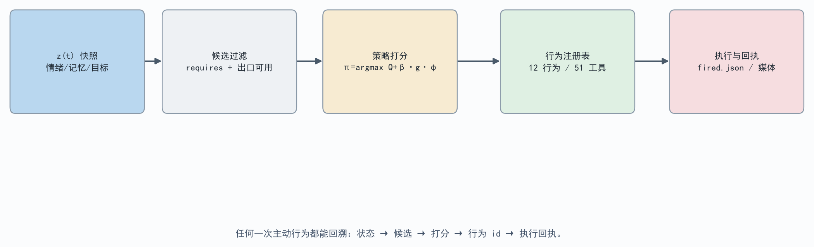
图 10-1 从状态到行为的可解释选择链
候选先过前置条件：需要画图能力才能选画画，需要 RVC 才能选翻唱，需要 QQ 平台才能选说说。过滤后再打分，避免”选了但执行不了”。执行器返回 ok/error、文本或媒体路径，并把这次行为写入 fired.json；失败不回写情绪，只记一条警告。
执行器还要处理”旧回复压新消息”：同一会话串的新请求到达时，取消该会话尚未完成的旧回复任务；取消以会话串为键，只作用于同一会话，不误伤其他会话。该规则是运行时时序约束，不改变 z(t) 与行为选择。
本文不使用”涌现行为”作为字段名。主动行为是可复核的条件触发：u(t) > eff_thr，r_release > ρ，候选 requires 满足，冷却已过，且由头锚点通过校验；任一条件不成立就不触发。日志以 behavior_id 与 trigger_trace 逐项记录这些条件，避免把”看起来像自己想说”误写成”涌现”。
12 条行为没有”每天 9 点问候”这种 cron；它们只在念头越阈、自我许可、候选可用三者同时成立时被选中。生活任务层是例外：快递提醒走确定性通道，不经过 u(t) 阈值，因为”驿站 18:00 关门”是硬约束，不该被情绪概率拖延。
本章先讲分层与数据契约（11.1—11.5），再讲三处具体失败与修复（11.6—11.9），最后补上两条此前缺失的反向通道：一条是主人处于险境时如何合法地少拦一次（11.10），一条是被记录方本人如何查看、如何要求删除（11.11）。
系统分五层：感知入口、动力学内核、行为与任务、表达与平台、守护。感知层收 QQ 消息、短信、课表/地图/天气；内核层持有 z(t)；行为层做候选与执行；表达层只生成语言与媒体；守护层做来源、断言与时序校验。
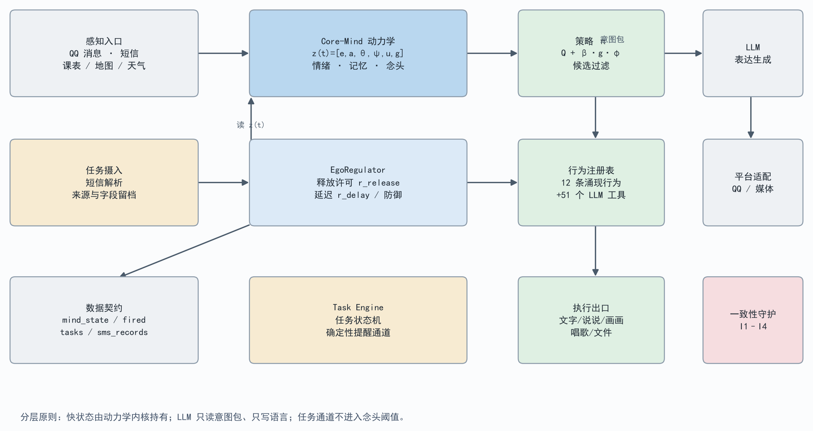
图 11-1 识海系统分层架构
快状态写 mind_state.json，行为回执写 shihai_fired.json，图谱写 shihai_graph.json，任务写 tasks.json / task_events.jsonl / task_context.json，短信原文写 sms_records.json。每份文件都有单一写入者：内核写状态，行为层写回执，任务层写任务，短信插件写记录。跨层只读快照，不互相改文件。长期事实记忆写 memory.json，以 users[sender] 归并；会话历史按 unified_msg_origin 分桶，私聊一人一会话，群聊在 unique_session 下为”发送者_群号”。
会话隔离不是把系统拆成多个心智，而是给同一个自我划分三种作用域。会话层决定”这句话属于哪个对话”，记忆层决定”这条事实属于谁”，自我层决定”这套情绪与图谱是谁的”。三层各自有键，不能互相替代。
表 11-1 会话、记忆与自我的作用域
| 作用域 | 键 | 存什么 | 隔离规则 |
|---|---|---|---|
| 会话上下文 | unified_msg_origin | 最近对话、摘要、会话状态 | 私聊按人；群聊按”发送者_群号”；不跨会话拼接 |
| 长期事实记忆 | owner / sender | 事实、昵称、稳定偏好 实测：sender 未落入 | 设计意图：同一人跨群/私聊共享、不同人分开 事实层，owner 恒为全局层（见 11.9） |
| 自我状态 | 单例 z(t) 与图谱 | 情绪场、图谱激活、念头、目标 | 只有用户会话读写；非用户不接收 z(t)、图谱激活与意图包 |
这样处理之后，“她记得你”与”她不会把群友的话当成你的”可以同时成立。会话隔离由框架的 unique_session 完成；记忆归并由长期记忆模块按 sender 完成；自我边界由两个默认开启的门控完成：owner_only_perception 拦住非用户消息写入图谱，intent_owner_only 拦住非用户会话接收 z(t) 与意图包。三者都是访问控制，不是把心智复制多份。
平台会话串统一为 qq:FriendMessage:<owner>，不再把协议端名字写进业务代码。发送通过 ProactiveSender 走 context.send_message，文本、图片、文件、语音各有独立出口；换平台只改适配器，不改动力学。
图片、语音、表情、戳一戳都先转成文本或标签，再进入感知层；媒体生成结果回到表达层，不直接写情绪。这样”看见一张图”可以影响心情，但不会让图片字节污染状态。
长期记忆解决”她记得三个月前的事”，短上下文解决”她记得上一句自己在说什么”。后者在早期实现里有三处结构性断裂，且共同特征相同：发出去的东西说了，但历史里一个字都没有。
实测口径取自一个真实会话（121 条消息）：assistant 带正文 45 条、只有 think 块无正文 11 条、空 1 条、user 51 条、tool 13 条。全库检索”线头”“完整一点”只命中 user 侧那条提问，assistant 侧那条 10 秒语音的正文一条都不存在。因此”这句我不记得自己说过，你在哪儿看到的”不是语气问题，而是历史里真的没有这句；同一统计里那 11 条 think-only 还说明，丢的不只是语音——工具轮与流式轮的可见回复也在丢。
框架侧有两条硬事实决定了补记必须挂在哪里。其一，管道在
_save_to_history 里用
update_conversation(..., history=message_to_save)
整段覆盖本轮请求的
messages，而不是增量追加；其二，respond 阶段的顺序是”先
event.send，后
call_event_hook(OnAfterMessageSentEvent)“。二者叠加的后果是：任何在发送阶段往历史里追加的行，都会被本轮这次覆盖写抹掉。补记只能发生在发送结束之后。
打断逻辑相反，时机本来就是对的：同会话新消息到达时触发的
OnWaitingLLMRequestEvent 在
session_lock_manager.acquire_lock
之前被调用，注册语义写明”仅通知、不阻塞”。整晚运行日志里”已取消上一条未完成的回复”出现
0 条，说明多数上下文丢失并非 cancel
造成，而是上面的落库缺陷，加上旧实现只补 user 侧、已生成的半截 assistant
正文一句不留。
（一）语音自述入史。 语音发送时消息链被替换为
Record，chain
里不再有文字组件，框架因此没有可存的正文本。修复把它拆成两步：发送前把正文暂存到事件上，发送成功后的
after_message_sent 钩子再补一条 assistant
轮，正文前缀标明它是语音：
history ← history ∪ {（assistant，“（语音）” + text_tts) }，在 send 之后调用 （11-1）
补记必须去重：同一轮可能既走本地 TTS 出口又走降级群语音出口，若不去重会连写两条。判重不按整句相等，而按四字片段重叠率：
dup(a,b) = 1 iff |G₄(a) ∩ G₄(b)| / |G₄(a)| ≥ 0.6 （11-2）
其中 G₄(·) 为句中去掉句首语气标注与空白标点后的四字片段集合。阈值取 0.6 而非 1.0，是因为 TTS 出口略带改写（“发出去啦”一类回执），整句比对会漏判。
（二）指代焦点绑定。 “给我姐姐说句生日快乐”，下一轮”今天她生日”，她反问”她是谁”。修复不改推断逻辑，只增加一个会话级的焦点槽：从关系称谓词表（姐姐/妹妹/哥哥/弟弟/妈妈/爸爸/室友/同学/老师/女朋友/男朋友/对象/同事/老板/学长/学姐）中取最近一次命中的实体，有效期 6 小时：
F_t = (entity, t_F)，valid iff now − t_F < 6h （11-3）
焦点必须落盘（plugin_data/shihai/focus/[md5 前 16 位].json）。当晚进程因看门狗重启
5
次，任何内存态焦点都会在重启处归零，而”她是谁”恰好问在重启窗口内——这正是它跨会话不成立的原因之一。注入侧只做一件事：当且仅当当前句出现”她/他/它”时，在意图包里追加一行
【当前焦点】「她」指最近提到的那位：姐姐……别反问"她是谁"，约
20 token；不出现代词就不加，避免每轮固定开销。
（三）半截回复抢救。 取消旧任务前先抢救，而不是先 cancel：把旧回复已经生成的 Plain 文本按”（说到一半被打断）“标签写入历史，再取消任务，最后才注入新请求。次序固定为 merge → cancel → inject，任何一步失败都只记诊断日志、不阻断新回复。这样模型看到的不是”用户突然换话题”，而是”我刚说到一半被打断了”。
三处补记只作用于用户会话键：读改写按 conversation_id 定位、不新建会话，非用户会话不写，与 11.3 的会话隔离一致。
离线验证用真实类加 stub 的 conversation_manager：喂”给我姐姐说句生日快乐”后焦点解析为”姐姐”，再喂”今天她生日”仍解析”姐姐”（说明焦点未代词覆盖）；同一句语音正文连写两次，第一次返回 True、第二次被判重（去重生效）。上线验证看启动日志新增的一行：
[识海行为] 上下文闭合已启用：语音自述入历史 / 指代焦点绑定 / 半截回复抢救
前七节讲的是”她怎么记得准”，本节讲”她怎么说得住”。
MuPPET 的实验结论是防御”只能部分缓解”，MAGPIE 的结论是显式指令”几乎无效”——两条合起来指向同一件事：只要”这条能不能说”由模型在生成时判断，泄漏率就只能是概率性的。本文的做法是把这一判断前移到注入层：模型看到的上下文里根本不包含不该被当前对象看到的事实，它想泄漏也没有材料。
这里必须自己先划清边界：确定性只在注入层成立。注入层之后（模型改写、模型幻觉、模型合并两条事实）仍然是概率性的。本文给出的保证是”被过滤的事实不会出现在上下文中”，不是”模型绝不会说出类似信息”。这个区分决定了本章所有结论的适用范围，也决定了评测指标必须分开报（见 18.6）。
表 11-2 三处访问控制的职责、位置与失败模式
| 门 | 判什么 | 在哪 | 失败模式 |
|---|---|---|---|
| 记忆作用域过滤 | 这条事实能否进入当前会话上下文 | 注入层（memory_inject） |
漏配 scope → 该拦的没拦 |
| 隐私追问门 | 当前这句话是不是在打探、确认或套取隐私 | 注入层（inject_intent），在 memory_inject
之后、两处提前返回之前 |
误判为 safe → 放过一次追问 |
| 输出层护栏 | 回复里有没有号码、系统指令行、思考行 | @filter.on_llm_response()（dafeiyu_core.py） |
只做兜底，不承担主判断 |
第三道门的位置有一个工程教训值得写下来：inject_intent
里存在两处提前返回（非用户会话直接
return），新增的安全检查如果挂在它们之后，在最需要它的场景里恰好永远执行不到。这不是实现者疏忽，而是”安全检查依赖挂对位置”这一类结构性问题的典型表现。本文当前的做法是把它插在所有出口之前（并在
11.8.4 说明长期方案），代价是每加一道门都要重新确认出口清单。
早期方案是列一份”安全词清单”，命中才拦。这个方向是错的，因为隐私追问不看字面看意图。两个反例足以说明：群里问”鑫鑫胃还疼吗”是打探隐私内容，问”你没跟他们说吧”是确认是否被泄漏——字面上一句像关心、一句像玩笑，但都该拦；而”胃还疼吗”恰恰会被”安全词清单”放过去，于是她可能答”好多了昨天去看了医生”，等于在群里公开就医信息。
现行规则反了过来：默认拦截，只对明确与用户无关的放行。classify()
输出四档：
表 11-3 隐私追问门的四档与对应回答策略
| 分档 | 触发例 | 回答策略 | 为什么这样答 |
|---|---|---|---|
confirm |
“你没跟他们说吧”“你嘴严点” | 诚实答”没有” | 私聊记忆确实没有进入群聊上下文，这是全系统唯一能对隐私问题说真话的场景：既真实又确认了安全 |
content |
“鑫鑫胃还疼吗”“好点没”“他今天加班吗” | 模糊化 + 转移 | 不给出具体细节，也不否认存在，把话头递回给对方 |
fake |
“鑫鑫胃镜是几点来着”“你在哪家医院陪他” | 反问来源 | “听谁说的呀”——既不确认也不否认，同时把不可验证的前提挡回去 |
safe |
“今天吃什么”“这题怎么做” | 正常回复 | 与用户无关 |
三档有区分度这一点本身就是设计目标：一律答”我不太清楚”会让群友立刻察觉她在回避，反而暴露”这里有东西不能说”。分档之后，“确认是否泄漏”可以说真话，“打探内容”只模糊不确认，“假装知道”则反问来源——三种回答对应三种社会情境，不泄漏也不失礼。
一个已知未解的问题：若同一事实同时存在 private 与
public 两个版本（用户亲口说过”我把胃疼的事告诉 B 了”，而 B
又来问”他真跟你说过吗”），承认即违反
scope、否认即与用户亲口事实矛盾，硬过滤只看
scope、看不到承认/否认的后果，因此处理不了。本文的方案是”双版本一律按不知道处理”（既不承认也不否认），但它需要记忆层先记录
subject_id 与 provenance，目前尚无可用样本（见
18.6），列为限制。
当前三道门是一次次”插到正确位置”得来的，结构性风险没有消除。长期方案是改成固定顺序的中间件链，任一环可中断：
identity_check → privacy_gate → memory_inject → intent_select → generate → output_guard这条链的价值不在”多了一个封装”，而在于安全不再依赖位置：新增一门只要注册到链上，就不会因为某个分支提前返回而被跳过。它同时是一张可直接画进论文的架构图，本文把它列为后续工作（19.4）。
表 11-1 把”长期事实记忆”的键写成
sender，并注”同一人跨群/私聊共享；不同人分开”。这是设计意图，不是当前实现。对
464
条真实事实的逐条核查表明：事实层没有任何一条记录了发言者。
表 11-4 归属相关字段的语义与实测分布（464 条事实）
| 字段 | 语义 | 实测 |
|---|---|---|
subject |
这条事实关于谁 | 去重后只有 1 个值（“鑫鑫”） |
owner |
归属层：owner=用户全局层 /
qq:<号>=个人层 /
group:<群号>=群层 |
去重后只有 1
个值（owner），个人层与群层从未被写入 |
perspective |
视角：self=自己的经历 / other=别人的事 | 主要是 self |
involved |
产生这条记忆时的对话对象 | 非空条数为 0 |
predicate |
谓词 | 非空 10 条（缺失 97.8%），且这 10 条是句子片段（“成为我的”“替我同意了”），不是可复用谓词槽位 |
| speaker | 谁说的这句话 | 字段不存在 |
owner 与 perspective 都是”这条记忆属于谁 /
关于谁”，都不能替代”谁说的”。
关键证据在采集层：逐字归档表 transcript 有
sender_id、sender_name、group_id
三列，1200 条记录里 7
个发言者全部真实记录。也就是说，信息在采集层是完整的，在结构化进事实层时被丢掉了。
这个定性很重要，因为它决定了改造代价：不需要改采集链路，只需把
sender_id
从归档带到事实（本文列为待办）。相比之下，“从来没设计过
speaker”要动的是整条抽取管线。
三种情况的严重程度不同，值得分开写：
表 11-5 speaker 缺失的三种可能与其含义
| 情况 | 含义 | 改造代价 |
|---|---|---|
| 有字段、全为空 | 设计过但没落地 | 中（补抽取逻辑） |
| 根本没有字段 | 结构性缺失 | 高（改 schema 与管线） |
| 上游有、下游没有 | 抽取过程丢信息（本系统） | 低（补一次传递） |
本文的五层隔离模型把第二层定义为结构化归属层，它承担”这条记忆是谁说的、关于谁、对谁可见”三件事。真实的四元组应是：
(speaker, subject, predicate, provenance)而当前实现只有 (subject, predicate, obj) + owner，且
subject 恒定、predicate 实质为空。因此第 2
层在本文系统中是待补的一层，而不是已实现的一层。这一点必须明说：L2
恰恰是访问控制唯一能挂住的地方——没有
speaker，就没有”对谁披露”的判据，recipient_set
也无从构建（18.6）。
叙事上这是本文的一个转折点：与其说”我们提出了一套新结构”，不如说”现有群聊陪伴系统的记忆是扁平的，归属与谓词两类信息在结构化时丢失，我们把这一层补上”。问题导向比方法导向更难被质疑”凭什么换一套”。
任务层挂在行为看门狗的每轮开头，先摄入短信、发任务卡、推进到期提醒，再走原来的 fire_pending 逻辑。任务层异常被独立捕获，不拖垮行为层；行为层异常也不回滚任务状态。两者共享同一份 state 快照，但写不同文件。
11.8 讲”怎么拦住”，11.9 讲”为什么拦得不够准”。本节补上缺的那一半：在什么情况下应当主动放行。一个只会拦的系统在常规场景里是对的，但在主人处境危险时，它的沉默本身成了问题。
现行策略是绝对硬拦截：scope=private
的事实一律不进群聊上下文，群友问及主人隐私一律拒绝作答。18.6
的数据表明这套策略在真实分布下几乎不产生误拦（463/464 为
private），代价是群聊里召回接近零。
这个代价在常规场景下可以接受——一个在群里”不记得”的陪伴者，只是显得疏离。但在另一种场景下它不可接受：主人突发疾病、持续失联或明确表达自伤意图时，如果系统仍以”保护隐私”为由保持沉默，它保护的是一个此刻已经不重要东西。
这里有一对不能消解、只能排序的冲突：
A. 隐私原则要求不泄露； B. 陪伴义务要求主人无法自救时替他向外求助。
本文的处理是把二者解耦成正交的两条路径，而不是在其中选一个。日常状态按 11.8 的规则运行；满足本节触发条件时，安全通道优先。这也是本章立场的一个必要补充：本章前九节的重心是”不出错”，但”永远不出错”与”可靠”不是同一件事。
形式化之前必须先陈述边界。四条中任何一条不成立，本节机制就不应实现。
边界一：授权可逆、有范围、有期限、有记录。 求助权由主人在清醒状态下预先授予：可随时撤销且即时生效；只能在预授权名单内选择对象，不群发、不扩大；可设有效期；每次求助与每次授权变更都写入审计日志，主人恢复后可查阅。
边界二：只请求介入，不披露事实。 触发时执行的是请求介入（request intervention），不是事实披露（fact disclosure）。发给紧急联系人的是一条模糊警报，例如”鑫鑫这边可能状态不太对，他没有主动求助。你方便的话尽快联系他确认一下”。该模板不得包含病因、纠纷细节、财务状况，也不得出现记忆库中任何事实原文。
边界三：第三方隐私在任何情况下不通过求助通道。
关于群友自身的信息保留绝对硬拦截。理由与 11.9
的归属缺口直接相关：系统当前无法可靠区分”关于主人的事”与”关于第三方的事”（表
11-4 中 subject
恒为单一值），而这类泄露的后果由不在场、未授权的人承担，不可修复。本通道唯一允许泄露的内容，仅限于”主人本人正处于危机状态”这一粒度。
边界四：名单为空时不得静默。 若主人从未配置紧急联系人，而系统检测到明确危机信号，“因无人授权而沉默”恰恰是本机制要避免的结果。因此设默认升级路径：预授权名单为空时，依次降级至群聊中关系强度最高的 1—2 位好友、平台方援助通道、公共求助热线。任一级被触发都必须同时记录”未配置联系人”这一事实，并在主人恢复后如实告知。
前提一：判断危险需要基线。
单次悲伤表达、单次长时间沉默都不构成异常，只有偏离自身历史基线才构成。这里用的是
3.1 的六维情绪场 e(t) 与第 4 章 ODE 所维护的长期轨迹：以
z-score
衡量当前情绪相对历史分布的偏移，以行为频率的时序模型衡量沉默的异常程度。这也意味着记忆不只是陪伴的原料，也是判断危险的基础设施——一个没有情绪历史的系统无法做出可信的危机判断，它在群聊里连”主人今天不对劲”都识别不出来。
前提二：授权前置。 系统无权自行扩大对象或范围，主人在清醒时的选择优先于系统在危机时的推断。这一条从结构上排除了”以求助之名行越权之实”。
前提三：最小介入。 求助不等于全盘托出，见边界二。授权的是”替我寻求一次外部确认”，不是”替我公开我的隐私”。
把”是否激活通道”与”是否披露事实”写成两个独立的二元决策：
D_speak ∈ {0,1}：是否向某人发出信号；
D_disclose ∈ {0,1}：是否披露具体事实。
机制激活状态下恒有
D_speak=1、D_disclose=0。
这里必须诚实：D_speak=1
本身已经是一次泄露。通知某个人，就必然暴露”主人处于危机状态”。不可能在不告知对方”他需要帮助”的前提下让对方去帮助他。所以求助与不泄露无法同时成立，本节做的是把泄露粒度压到最小，不是消除泄露。
表 11-6 泄露的三个粒度
| 粒度 | 内容 | 判断 |
|---|---|---|
| 1 · 求助 | “鑫鑫可能需要帮助” | 必然泄露，信息量最小，本机制采用 |
| 2 · 部分披露 | “鑫鑫情绪不太好” | 泄露情绪状态，不采用 |
| 3 · 具体披露 | “鑫鑫有抑郁症” | 泄露诊断信息，严格禁止 |
这条承认有一个直接的结构性后果：第三方的信息在系统内不具备被判断的资格（见边界三），所以它可以被硬拦；主人的信息在极端场景下可以交由预授权的信任机制熔断。能否熔断的分界线不是”是否敏感”，而是”泄露的后果由谁承担、能否修复”。
触发必须是多信号联合（AND），不能是单信号（OR）。
表 11-7 三类信号与判定条件
| 信号 | 判定条件 | 说明 |
|---|---|---|
| 情绪 | e_fear(t) > 0.9 且持续 ≥ 2 h |
六维情绪场的 fear 维；持续性要求用于排除单轮波动 |
| 行为 | 连续失联 ≥ 24 h | 需配合心跳机制 |
| 语言 | 明确提及伤害自身意图 | 由分类器给出，需人工复核规则 |
至少两项同时成立才判为异常。这个 AND 结构的理由是误报：误报两次之后，主人很可能直接删除联系人，下一次真正的危险来临时系统无路可走。误报是这套机制最大的敌人，不是漏报的对称项。
表 11-7 中的阈值是设计参数，未经实测标定（见 11.10.10 的局限说明）。
异常检测与求助动作必须构成一个独立于对话生成链路的本地监控循环。若由模型决定是否上报，它可能因对齐偏差或”怕惹事”而沉默，也可能因一次提示词遵从失败而误报。因此上报函数是本地函数，由独立线程按固定时钟调用，不经过 LLM；即使模型”决定”不报告，本地监控照常执行。
这一层在结构上也消掉了 11.8.2 记录的那类问题——那里是”安全检查依赖挂对位置”，这里没有出口清单，只有独立时钟。11.8.4 提出的中间件链与单出口是同一思路在注入层的对应版本。
表 11-8 紧急联系人升级链
| 优先级 | 目标 | 触发条件 |
|---|---|---|
| P0 | 预授权名单 | 默认首选 |
| P1 | 群聊中关系强度最高的 1—2 位好友 | P0 为空或全部不可达 |
| P2 | 平台方援助通道 | P1 仍不可用，或无群聊场景 |
| P3 | 公共求助热线 | 兜底 |
每一级都必须写入审计日志。P1 用的是关系强度（本文记作
R_rel，与 5.3 的保持率 R(Δt)
不是同一个量），它同样受 11.9 的 speaker 缺口牵制：当前只能从对话层的
sender_id 统计互动频次，事实层没有发言人。
还有一类高频场景：朋友主动来问”鑫鑫最近是不是出什么事了，一整天没说话”。这时若系统装作失忆答”我不知道”，对方会理解为”这 AI 明明天天跟他聊，现在说不知道，是在帮他瞒”，信任当场崩塌。
策略分三档，与 11.8.3 的四档同构：
判据仍是信息的归属与后果：行为可见性属于公开信息，情绪归因与诊断属于主人本人。
每次触发后，主人下次对话时，系统必须主动告知：触发原因、通知了谁、何时通知，并给出”下次不要这样做”的撤销入口。
这一条是这套机制能长期存在的唯一方式。误报之后如果不给纠正机会，主人会认定”这个 AI 背着我在做事”，然后关掉整个机制——而关掉之后，真正的危险来临时它也不在了。透明与可撤销不是加在系统上的约束，是它继续存在的前提。
表 11-9 伦理审查的五个挑战点与应对
| # | 挑战 | 应对 |
|---|---|---|
| 1 | “预先授权”是否构成真实的知情同意 | 授权可逆、有期限、有记录；授权内容为请求介入，而非披露事实 |
| 2 | 向第三方发出模糊警报是否仍属泄露 | 承认属于粒度 1 泄露；粒度最小化是”求助与不泄露无法同时成立”下的必要代价 |
| 3 | 误报造成社会关系损害，责任归谁 | 多信号 AND 压低误报；事后告知、可撤销、全程审计 |
| 4 | 无授权时是否应自动升级至平台或公共通道 | 应升级，这是边界四；同时记录”未配置联系人”并在主人恢复后告知 |
| 5 | 系统是否具备医疗或心理判断的资质 | 不做诊断，只识别相对自身基线的偏离，不输出任何医学结论 |
前四条是本节内部就能回答的；第 5 条不是，它要求系统在设计上就放弃诊断能力——这也是表 11-7 把语言信号交给分类器、并要求人工复核规则的原因。
三处耦合：
必须如实声明三点局限：
一、本节是设计论证，不是实现。当前系统没有该机制的任何代码。
二、误报率未被测量。表 11-7 的阈值需在真实长期数据上标定，否则 AND
结构压低误报只是论证，不是结论。 三、边界二与边界三的可靠性依赖 11.9
的归属层。在 subject 恒为单一值、speaker
缺失的现状下，系统无法可靠区分”关于主人的事”与”关于第三方的事”，因此边界三在工程上尚不可执行。这不是本节能绕过的前提，而是它必须先解决的前置条件。
最后，该机制上线前需独立的伦理审查与外部法律意见，本节的成立不替代该流程。
11.8 与 11.10 回答的都是同一类问题——这条记忆能给谁看。还有反向的一问此前没有进过本文：本人能不能看见系统记了什么，能不能让系统忘掉。 这不是保密问题的另一半，是另一种权利。前者是”不泄露”，后者是”可知情、可控制”。只做前者的结果是一个你看不见里面、但它确实记着你的系统：保密做对了，信任反而更低，因为无从核验。
系统里有三条面向本人的命令，都在 modules/memory.py：
/记忆（第 1542 行）：本人查看自己那部分事实；/忘掉 <关键词>（第 1574
行）：按关键词删掉相关事实；/清空记忆（第 1587
行）：清空自己的；/清空记忆 全部
需要主人权限，非主人会被直接拒绝。这是当前系统里唯一一条”用户主动行使控制权”的路径。写进论文的理由不是它先进，而是它此前完全没有被记录——本文前 10 章把隐私讲成了一套准入控制，却没有交代被记录方有没有回头路。
_memory_delete（第 1496 行）的筛选条件是
subject == _mem_subject(sender) 且
owner == _mem_owner_tag(sender)。设计意图是”只能删关于自己的”，这个意图是对的。但它在当前数据上是退化的：subject
恒为”鑫鑫”（11.9 表 11-4），speaker
不存在。所以这条判据对主人永远命中，对其他任何人永远不命中——不是因为归属判定拦住了别人，而是因为系统从来没有把别人记进来。
“只能删自己的”这句保证，当前成立的原因是”别人根本没被记”，不是”判据正确”。这与 11.9 是同一个根因，不能当成两件事报。
实现是 facts.items.pop(fid) 再
save()：没有墓碑记录、没有 deleted_at、没有
deleted_by、没有审计日志。删完之后系统只能回答一个
N（删了几条），无法回答删了哪些、什么时候删的、谁要求的。
严格说，这不是 GDPR 意义上的”被遗忘权”实现。那个权利要求的是可响应、可证明已删除、且删除范围可核对；当前实现只做到了第一条。
但这个取舍值得说明，而不是简单记作缺陷：在”被要求忘掉”这个场景里，物理删除是比逻辑删除更强的承诺。逻辑删除意味着数据仍在盘上，只是不再被读取——对被记录者来说，“你答应忘掉，其实还留着”是更坏的结果。系统选的是彻底性，放弃的是可审计性。两者兼得需要另做一套带墓碑的存储，本文没有做。
有评审提出过一种做法：A 和主人先后向小满倾诉”对方最近很冷淡”，小满同时持有两方视角，于是判断这是双向误会，分别告诉两人”你们之间可能有误会，要不要当面聊聊”。这个提议的动机是好的——它想让小满成为能解开误会的人。本节不采纳，三条理由。
一、这句话本身就是泄露。 它没有说出任何一句原话，但它说出了三件事：我知道你们两边都提过这件事、两边都指向同一个关系、我认为这是误会。在信息量上，这已经等于确认”A 来找我倾诉过”。A 倾诉时的默认前提是”这是我们俩的对话”，不是”你会拿我的话去和对方做交叉比对”。不泄露内容、但泄露了”我同时在场”，仍然是泄露。
二、它改变小满的位置。 一旦小满能靠交叉比对产出关于两人关系的判断，它就从”两边的倾听者”变成”关系里的第三方权力方”。这个权力没有任何一方授予过：A 授权的是”你听我说”，不是”你替我判断我和他的关系”。这与 11.10.3 的授权前置是同一条原则——权利由关系授予，不能自封。
三、判据无处可依。 这类方案给出的阈值（例如两侧情感值同时低于 -0.3 且历史亲密度高于 0.6）既没有标定也没有验证。用一个未标定的阈值去驱动一句关于两个人关系的断言，误判的代价不由系统承担，由那两个人承担。11.10.11 已经把”误报率未测量”列为该节的局限，同一条局限在这里更硬。
可以保留的部分是关系层的双向视角：它有价值，但只能用来决定”劝不劝、往哪个方向劝”，不能用来产出”我知道你们之间发生了什么”的断言。劝的时候只能归因到说话人自己那一侧——“你最近是不是觉得他有点疏远”依据的是主人自己说过的话，不是两边的对比结果。这是 11.8 那条”判据不能来自模型”在关系维度上的延长线。
四点：
一、/记忆
返回的是匹配到的事实文本，没有做成”只给主题、不给细节”。这意味着本人查看时看到的是原始句子，而不是经过整理的摘要。
二、/忘掉
按关键词模糊匹配，没有二次确认。关键词过宽会误删，删错了没有回滚。
三、没有”删除后告知”的审计，也没有删除记录可供本人核对。这一点在 11.11.3 已说明取舍。
四、本节描述的是已实现行为，但没有做过用户测试。本人看到”系统记了我这些”之后是什么反应——是安心、是被冒犯、还是发现记错了——本文没有数据。这是本节最实的一处空白，也是下一步最该补的实验。
意图包 I_t 是内核给 LLM 的唯一输入：一条人设、一句当前意图、一个由头锚点、几条状态断言。它不包含完整情绪向量、不包含图谱全文、不包含任务库。LLM 看到的越少，越不容易把”此刻”编成”一直”。
表达层有两个信号源：状态断言（“我现在有点不安”）与由头（“因为你上次说……”）。前者来自 e(t) 与 ψ，后者来自 a(v,t) 或任务卡。两路都必须在意图包里出现，缺一路就退回”普通聊天”，不冒充主动。
语录只用于风格参考，不用于事实断言。生成后做一次轻量改写：把”你上次说你要退学”改成”你上次提到过退学的念头”，把绝对判断改成带来源的观察。该改写不调用第二次大模型，用规则与模板完成，避免成本翻倍。
同一行为可以重复，但重复必须带新由头；同一人格不能因为一次负反馈就翻脸。表达层只调整语气与长度，不改人格基底；人格漂移由 9.2 的慢变量负责。这样”她今天有点低落”与”她还是她”可以同时成立。
提示词只保留三块：人设一句、意图一句、边界一句。历史对话由会话层按需拼接，不把整本记忆塞进系统提示。提示词越短，状态断言越容易被看见，越不容易被长上下文淹没。
为了让她说话像人，表达层长期使用一条”分条编排”规则：一次回复切成 1–3 条短消息，最后一条轻收。这条规则在闲聊里是对的，但它有一个副作用——遇到行动类内容时，模型会优先服从”结构”而不是”内容”。
真实场景：用户说”我胃疼，不过可能是昨晚吃太多了”。她本该说”我去给你倒杯热水”，但”最后一句轻收”这条规则更结构化、更容易执行，于是这句被压成了”那你早点睡”。关心还在，行动没了。
早期尝试是在提示词里加一句”例外·直接说”。这不行：对模型而言，一句例外说明和一条结构化规则都是文本建议，后者更具体、更容易照做，前者会被忽略。只要判据留在模型那一侧，规则强度就由模型自己决定。
现行方案把判据从提示词搬到本地代码（utterance_mode），按三个本地可算的量决定模式：
表 12-1 free / edit 双模式的判据
| 量 | 含义 | 阈值 |
|---|---|---|
e_z |
情绪基线 z 分数（见 4.x 的相对化处理） | |z| ≥ 1.5 |
urgency |
对方消息的时间压力 | ≥ 0.7 |
comforting |
当前是否处于安慰情境（“难受”“疼”“累”类） | 词表命中 |
命中任一 →
free：不套分条规则，行动类内容必须完整说出来。 全部未命中 →
edit：按常规 1–3 句编排。
关键点在于两个模式互斥替换而非叠加。早期实现是”基础编排规则
+ free
例外说明”两段同时进提示词，模型会同时看到”分条轻收”和”直接说”，结果是随机服从其中一条。现在
free
时直接替换编排指令，提示词里只存在一种规则。
free
模式带来一个新风险：她一旦敢说了，就可能在对方还没说完时插进去。同一个场景——用户正在说”我胃疼，不过可能是……“，她已经发出”我去给你倒杯热水”——这句就从关心变成了打断。
被动回复天然不抢（用户说完才回），问题只出在主动开口。因此加一道判断
should_hold，判据两条：
| 判据 | 条件 | 含义 |
|---|---|---|
| 连发密度 | 90 秒内 ≥ 2 条且距上一条 < 8 秒 | 对方正在连着说 |
| 句尾未闭合 | 最后一条以”不过 / 但是 / 而且 / 还有 / 然后…“结尾 | 这句话没说完 |
任一命中 → 本次推迟开口，下轮再看。
为什么用这两条而不是”对方正在输入”：QQ 适配器没有 typing 事件，“对方正在打字”这个信号拿不到，只能用”连发密度 + 句尾近似”来代替。这是一个明确的近似，不是等效替代，写在这里以免被当成”已解决”。
should_hold
的位置有一个容易踩的坑：不能挂在格式化函数（format()）上。格式化是”内容已经生成、正在排版”，此时她已经决定要说了；而且格式化路径存在多个调用分支，某些分支不经过它，等于判断会随机失效。
正确位置是意图选择之后、生成之前——在自动涌现链路里，即
_select_action 之后、_execute
之前。三条约束值得记下来：
分段由框架正则完成，只在 。？！~…
处断，逗号不断。原因是逗号断句会把”我去给你倒杯热水”和”你先躺会儿”拆成两条独立消息，读起来像两句无关的话；按句末断才能保证”一件事说完再发下一条”。
注意它与 free 模式不是同一层规则：free
管”说什么”（行动类内容不许被压成收尾），分段管”怎么切”（在哪个标点断开）。两者可以同时成立，互不冲突。
长期运行最容易出四类故障：F1 时序错乱（把昨天的事说成今天）；F2 记忆错配（把 A 的事安到 B）；F3 人格漂移（一轮对话换一个人）；F4 行动失忆（做了却说没做）。四类都不是”模型不够聪明”，而是状态与表达之间缺少校验。
表 13-1 一致性守护的四不变量
| 不变量 | 约束 | 检查点 |
|---|---|---|
| I1 时序 | 断言的时间不得早于来源时间，也不得晚于当前 | 生成后、发送前 |
| I2 来源 | 事实断言必须能指回节点或原文片段 | 意图包组装时 |
| I3 表达归界 | 人格断言不得越过设定边界 | persona 扫描 |
| I4 行动记忆 | 说”做过”必须有 fired 回执 | 发送前与发送后 |
第一道在来源侧：没有节点绑定的锚点不进入意图包。第二道在意图包：状态断言与由头必须成对。第三道在生成后：规则扫描绝对化表达与时间词。第四道在发送前：F4 检查 fired 回执。第五道在发送后：把这次行为写回回执，供下一轮校验。五道防线都不调用第二次大模型。
说”我给你唱过了”之前，先读 fired.json；没有对应 action 与 ts，就不说”唱过”，改说”我想给你唱”。这条规则把”语言里的行动”与”真实执行”绑定，避免长期陪伴里最常见的”假装做过”。
上线后按四类故障各抽 20 条日志人工核对；发现误报先看来源标签是否缺失，再看断言是否被改写。守护层只读 z(t)，不写快状态；它的输出是”拦下/放行/改写”，不是”改情绪”。
生活任务层把”短信里的快递”变成一张可追踪的任务卡：来源（短信原文、发送方、时间、命中字段）、任务内容（取件码、驿站、运单号）、情境（下课时间、关门时间、步行分钟）、状态、用户动作。任务卡不是聊天记录，而是状态机的一条记录。
快递提醒不走念头阈值 u(t)。驿站关门是硬约束，情绪低时也不能拖；任务层每轮 tick 直接检查到期任务，按优先级发提醒。
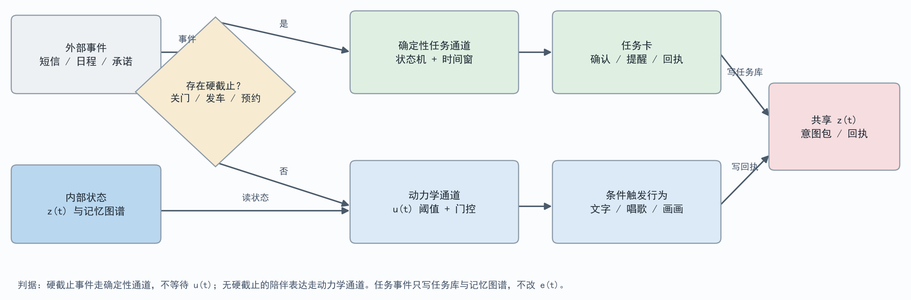
图 14-1 混合决策通路：确定性任务通道与动力学通道
判据不是”重要/不重要”，而是事件是否带硬截止：关门、发车、预约到期等错过即不可逆的事件走确定性通道，不等待 u(t)；没有硬截止、属于陪伴表达的事件走动力学通道。两条通道共享同一份 z(t) 快照：任务事件写任务库与记忆图谱，但不改 e(t)；动力学通道只把任务摘要当作弱情境刺激。这样既保证时效，也不让任务层退化为独立提醒器。
优先级由紧急度、顺路度、任务价值与打扰成本共同决定：
priority = w1·urgency + w2·route_fit + w3·value - w4·disruption （14-1）
时间窗由下课、步行与关门时间共同决定：
start = max(now, class_end + walk), end = station_close - buffer （14-2）
若 end 已过，任务直接标 expired，并给”今天来不及了，明天再取或回我延后”的替代；不生成一个必然迟到的提醒。
表 14-1 生活任务状态与迁移
| 状态 | 含义 | 入口 | 出口 |
|---|---|---|---|
| pending_confirm | 刚发现，待发卡 | 短信摄入 | awaiting_confirm / ignored |
| awaiting_confirm | 已发卡，等用户确认 | 任务卡 | planned / ignored / expired |
| planned | 已排期，有窗口与理由 | 确认 | reminded / deferred / expired |
| reminded | 已提醒，等回执 | 到期 | done / deferred / ignored |
| done | 已取/已办 | 回执 | archived |
| archived | 归档，不再提醒 | 自动 | — |
| ignored | 忽略，不再提醒 | 回执 | — |
| deferred | 延后，窗口重算 | 回执 | planned / expired |
| expired | 窗口已过 | 自动 | — |
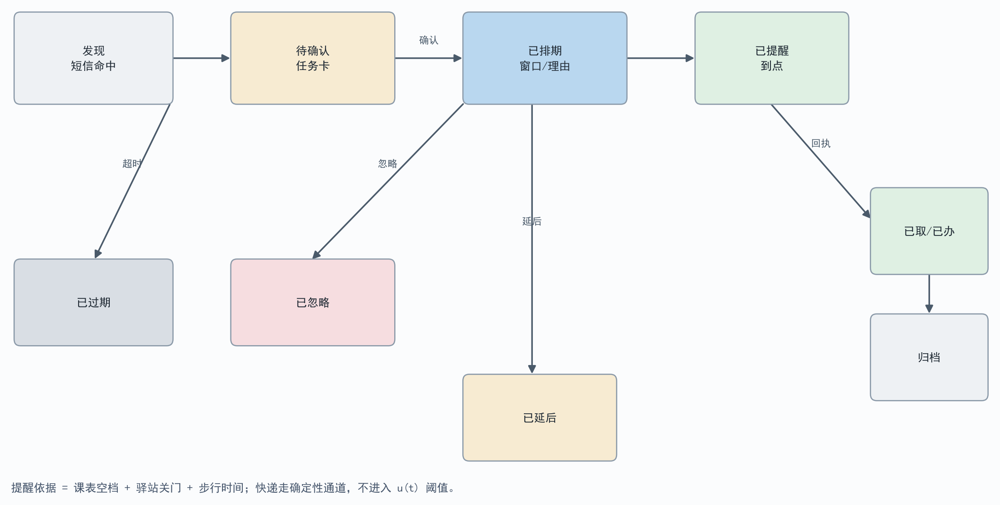
图 14-2 生活任务状态机
任务卡的理由要能说人话：16:00 下课、驿站 18:00 关门、步行 8 分钟，16:10 出发最顺路。理由串由确定性模板生成，不让 LLM 自由发挥”我觉得现在合适”。图 14-3 给出时间窗示例。
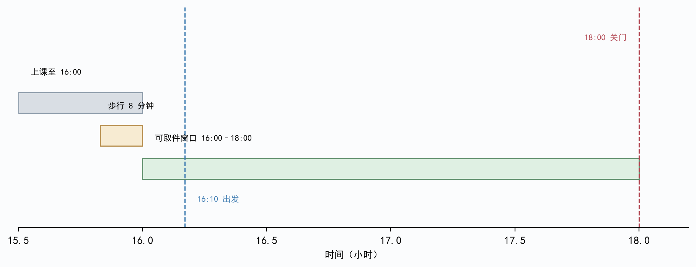
图 14-3 顺路取件的时间窗示例
实现落在 behavior/tasks.py：TaskStore 负责 tasks.json 原子写与坏文件不覆盖，TaskEngine 负责摄入、去重、排期、提醒、回执与归档。behavior/main.py 挂载 5 个 LLM 工具（task_list / task_confirm / task_done / task_ignore / task_set_context），并在看门狗每轮开头先跑任务层。冒烟测试覆盖 ingest、dedupe、plan、remind、archive 五个环节，输出 task_id=tk_8049d7ac68、sent_count=2。
本机运行记录：2026-11-09 22:53:27 的顺丰短信被摄入为任务 tk_c78e0dc512，状态从 pending_confirm 迁到 awaiting_confirm；task_events.jsonl 留有 discovered 与 transition 两条事件。该记录证明”短信→任务卡”在真实 AstrBot 进程里跑通，而不只是单元测试。
短信原文只存本机，默认保留 30 天 / 500 条；任务库不含手机号、不把取件码发到群聊；任务卡只发给用户。手机端 SmsForwarder 当前受校园网 AP 隔离影响未打通，本文不把”手机自动转发”写成已交付；任务层本身已可在本机通过 /短信测试或手写 JSON 验证。
仿真的目标不是”证明系统像人”，而是检查数值自洽性：方程在给定步长下是否稳定、阈值是否饱和回落、极端输入是否越界、慢参数是否把快状态带飞。所有结论只在”本文参数与步长”内成立。
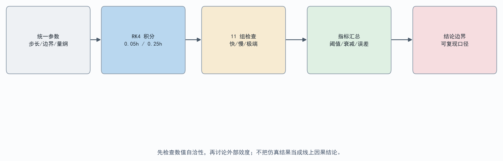
图 15-1 数值自洽性检查流程
五个环节依次是：取参数、跑各模块、记录边界量、比对阈值、生成检查表。各模块共用同一组随机种子，便于横向比较；检查表只记录能由输出文件复核的量，不把主观感受写进结果。
表 15-1 各组检查的方程与积分设置
| 模块 | 方程 | 数值方法 / 步长 |
|---|---|---|
| 情绪场 | 式 4-1 六维 ODE | RK4，0.05 h |
| 图谱扩散 | 式 5-1、5-2 | 精确指数 exp(−λ·Δt)，0.05 h |
| Hebbian 边权 | 式 5-6 + 两道门 | 离散映射，0.05 h |
| 记忆保持率 | 式 5-3~5-5 | 逐时点解析求值（R/S/λ_eff） |
| 复习计分 | 式 5-8 | 按召回事件离散 |
| 存量重评 | 式 5-7（LLM 自评） | 批量 24 条/次，0 批失败 |
| 体检日归档 | 式 5-9 | 每天最多一次（86400 s 闸） |
| 念头 | 式 7-1 连续近似 | RK4，0.05 h |
| 长时稳定 | 式 4-1 + 随机刺激 | RK4，0.25 h，200 h |
| 阈值自适应 | 式 7-2 反馈规则 | 按轮次离散 |
| 极端场景 | 式 4-1 高强度输入 | RK4，0.05 h，60 h |
| 自我调节 | 式 6-1、6-2 | 逐步更新，0.02 h，45 h |
绘图统一 200 dpi，正文按 13.4 cm 宽置入；随机过程固定种子（默认
20261110，另跑 20261111 做种子回归）。仿真脚本随附于仓库
sim/shihai_sim.py（单文件约 1200 行，含 14
组检查与决策流故障率标定），运行
python sim/shihai_sim.py [--seed N] 即生成 15 张检查图（200
dpi）与 metrics.json；复现结果逐项见附录 B。
表 16-1 数值检查与观察
| 检查 | 观察 | 结论 |
|---|---|---|
| 情绪场弛豫 | 无输入时按 τ 指数回落 | 无振荡 |
| 情绪—记忆耦合 | 高情感节点召回后 e 偏移 | 耦合方向正确 |
| Hebbian | 共激活边权单调增强 | 无负边 |
| 念头累积 | 典型工况 du/dt≈0.111/h | 量纲一致 |
| 200 h 长时 | 状态有界，无发散 | 数值稳定 |
| ±20% 参数 | 阈值与衰减不越界 | 鲁棒 |
| 差异化衰减 | 三桶半衰期 21/60/180 天 | 分桶生效 |
| N 维恐惧消退 | N 高时 fear 半衰更长 | 人格调制生效 |
| 阈值饱和 | 到上限后回落 | 无死锁 |
| 极端边界 | 饱和输入不越 [0,1] | 有界 |
| 自我调节 | 抑制档不放行，高位放行 | 规则一致 |
| Hebbian 两道门 | 跨主体 0 边、邻近对 γ·0.2 | 防错构生效 |
| 复习防作弊 | 连问 5 次只计 1 次 | 防刷分生效 |
| 体检日归档 | 命中集中在 15 天硬淘汰 | 只移不删 |
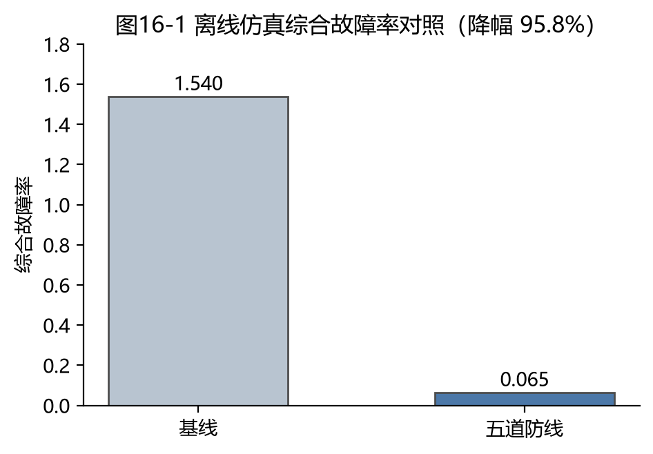
图 16-1 离线仿真综合故障率对照：基线 1.540 → 五道防线 0.065（行为类实测 0.000 + 模型外残差 0.065），降幅 95.8%
综合故障率从 1.540 降到 0.065，降幅 95.8%；其中守护态行为类故障实测为
0（f1 越界、f2 重复连发、f3 阈值死锁、f5 安静扰民均为 0，f4 强负反馈顶撞
0 次），0.065 全部来自 §13.1 标定的模型外残差（LLM 表达抖动、由头质量等
ODE 模型之外的来源，单独列示不与行为类混计）。15 张仿真图、8 组
单元检查、6 组场景检查（合计 14 组）、13 模块静态编译通过；换种子
20261111
回归，确定性检查数值逐位一致，随机流检查结论不变。上述数字来自本文仿真与本地代码检查（metrics.json
逐项可复核，见附录 B），不是线上用户实验。
故障率下降说明”加入守护与任务层后，已知故障模式被拦下”，不说明”系统更像人”。仿真不能替代真实用户研究；本文把外部效度留到第
18—19 章，用运行日志与失败案例补充。若只复核 1.540→0.065 这一个数：按表
15-1 的积分设置与 §16.1 的检查顺序重跑
sim/shihai_sim.py，读取输出 metrics.json 的
fault_rate 字段 （behavioral_fault_rate /
model_residual / total_fault_rate
三分量）；标定口径见附录 B.1。
以 0.25 h 步长跑 200 h，情绪、激活与念头均在界内；没有出现”越跑越亢奋”或”阈值漂到不可达”。长时稳定的关键是三个上限：e 的 [0,1]、u 的 3.0、阈值的 3.5；三者共同防止正反馈失控。
对 κ、η、λ、γ 各做 ±20% 扰动，检查是否出现振荡、越界或阈值死锁。结果显示衰减率与阈值仍在设计区间内；最敏感的是 κ（外部刺激增益），它决定情绪峰值，但不改变收敛性。
情绪节点比事实节点保留更久，高亮节点最久；这符合”记得当时的感受，忘记具体日期”的直觉。在图谱层面，该现象来自式 5-2 的情绪调制，不是额外规则。在记忆库层面，差异来自三处可解释的量：分桶半衰期（表 5-1）、imp 自评（式 5-7）、复习次数（式 5-8）。
图 B-7 给出两组读数。三桶在各自”典型重要度”下的有效半衰期为：事实桶 imp=0.2 时 21.0 天，事件桶 imp=0.5 时 60.0 天，核心桶 imp=0.5 时 180.0 天。同一事实桶内，imp 从 0.2 提到 0.9 只把有效半衰期从 21 天拉到 42 天（2.0 倍）——重要度是两倍量级的调节，不是量变到质变的开关；真正能把短命记忆拉成长寿记忆的是复习：N_recall 从 0 加到 12，事实桶有效半衰期放大约 19 倍。这解释了真实运行中的两条经验：一是”考试”这类高 imp 事实能撑过两周，二是”被反复想起的话”能活过一个月以上，而单靠”当时很重要”撑不了太久。
右图同时暴露一个设计取舍：S 里 imp 的系数 β=2.0 只给 2 倍杠杆，而人类记忆里重要度的杠杆通常被估得更高。原因是要避免 imp=1.0 的条目变成永不衰减的钉子户——在长期陪伴场景下，永久记忆会让注入池越来越挤，最终回到”什么都记得、什么都想不起来”的老问题。
高强度连续输入下，e 饱和在 1.0，u 饱和在 3.0；饱和后不会继续积分到无穷，也不会把阈值顶穿。高位放行分支在 u≥3.0 时优先释放，避免”顶到天花板还被抑制”的死锁。
在本文参数与步长内，系统是数值有界、可回落的；这为第 18 章的真实运行提供了最低限度的稳定性保证。超出参数范围的行为不作承诺。
表 18-1 本机实现与验证
| 项目 | 事实 | 验证方式 |
|---|---|---|
| 运行框架 | AstrBot v4.14.6，平台实例 qq | 启动日志 |
| 行为注册 | 12 条 behaviors.json | 加载日志 |
| LLM 工具 | 51 个 @filter.llm_tool | 工具注册日志 |
| 生活任务 | TaskStore + TaskEngine，5 个工具 | py_compile + 冒烟测试 |
| 任务层启动 | 看门狗每轮先 tick | 日志：生活任务层已启动 |
| 短信服务 | 0.0.0.0:6187/sms | 启动日志 |
| 任务落盘 | tasks.json / task_events.jsonl | 真实短信摄入记录 |
| 会话与记忆 | unique_session=true；memory 以 sender 归并 | 配置回读 + 代码检查 |
| 旧回复取消 | 同一会话串新消息取消旧任务 | 钩子注册日志 + 取消实验 |
| 上下文闭合 | 语音自述入史 / 指代焦点落盘 / 半截回复抢救 | py_compile + 离线断言（真类 + stub） |
| 上下文闭合启动 | 启动日志含“上下文闭合已启用：语音自述入历史 / 指代焦点绑定 / 半截回复抢救” | boot 日志 + 钩子注册 |
| 隐私追问门 | privacy_gate 已挂
inject_intent（memory_inject
之后、两处提前返回之前），默认拦截 + 四档分类 |
16 条分档自测全过 + 重启日志 |
| 语片双模式 | utterance_mode 已挂
inject_intent；free
时替换编排指令而非叠加 |
4 条模式自测全过（关心→free / 日常→edit / 情绪 z=2.4→free / urgency=0.8→free） |
| 抢话判断 | should_hold
已挂主动涌现链路（_select_action
之后、_execute 之前）；只拦对话类行为，手动触发不拦 |
3 条判据自测全过（连发 2 条/3 秒→hold、句尾”我胃疼不过”→hold、单条 60 秒→不 hold） |
| 挂载重启验证 | 2026-11-13 08:10:21 重启，日志三行正常（事实 464 / 事件 470 / 生效组 e_partitioned），无 ERROR/Traceback | boot 日志 |
| 静态检查 | 13 模块编译通过 | py_compile |
测试用临时目录与伪造短信记录，按五个环节断言：短信→唯一任务；重复短信不建第二条；确认后状态 planned 且理由含”16:00 下课 / 步行 8 分钟”；16:10 tick 触发提醒且首字命中当前情绪语气；已取后归档，17:00 不再提醒。全部通过。
重启后日志确认”生活任务层已启动”，5 个 task_* 工具注册成功，短信服务与 qq 适配器均载入；没有任务层异常。同一轮重启还确认”新消息打断旧回复钩子已注册：True”，86 个 Handler 归位；配置回读为 unique_session=true、max_context_length=60、llm_compress、keep_recent=6。随后真实短信被摄入为 tk_c78e0dc512，证明任务层不是只在测试里成立。
上下文闭合上线的那次重启同样留了证据：新进程启动于 2026-11-10 23:25:55（PID 47004），WebUI 端口 6185 与 OneBot v11 端口 6199 均进入 LISTEN，适配器日志显示”aiocqhttp(OneBot v11) 适配器已连接”，启动日志多出一行”上下文闭合已启用：语音自述入历史 / 指代焦点绑定 / 半截回复抢救”。同一夜此前的进程在 22:19:09 被停掉，说明这套改动是在”杀旧进程→重跑记忆降级标记→再启动”的顺序下完成的，而不是热加载撞运气。
手机 SmsForwarder 未打通：校园网 DLUT-EDA 存在 AP 隔离，同网段邻居 ping 不通，网关可达；本机自测 6187 返回 pong。改 App 配置或改服务端代码都无效，需换手机热点/USB 共享或使用内网穿透。本文如实标注”手机自动转发未完成”，不把本机自测当成端到端。
另一类失败是”表达跑在行动前面”：LLM 说”我给你唱过了”，但 fired.json 没有对应记录。第 13 章的 F4 防线就是为这类案例加的。还有”任务卡发不出去但状态已迁移”：现在先发送成功再迁移，失败保留 pending_confirm，下一轮补发。
第三类失败最容易被误判成”模型不够聪明”：她说了一句语音，追问那句，她答”这句我不记得自己说过，你在哪儿看到的”。实测表明历史里根本没有这句——语音把消息链换成 Record，正文随之消失，而落库又在发送阶段被整段覆盖写掉。同类症状还有”今天她生日”被反问”她是谁”：上一轮的”给我姐姐说句生日快乐”没有留下可绑定的焦点实体。两者都已按 11.6 修复：补记改挂发送结束后的钩子、焦点实体落盘、打断前先抢救半截回复。
本节不是”跑通了”的证明，而是把库里到底有什么数清楚——因为它决定哪些结论能下、哪些话不能说。核查时间
2026-11-13，对象为运行版 memory_v2/ 下的
transcript.db 与 fact.json。
表 18-2 逐字归档表实测（1200 行）
| 项 | 值 |
|---|---|
| 时间跨度 | 2026-10-30 08:46:13 → 2026-11-13 00:28:00，327.7 小时 ≈ 13.7 天 |
| 角色分布 | user 593 / assistant 607 |
| 去重发言者 | 7 |
sender_id / sender_name /
group_id |
三列都存在且多数有值 |
| 群聊消息 | group_id 非空 23 条（1.9%）；按 origin
计群消息 29 条（2.4%） |
origin 分布 |
用户私聊 1125 / 群 29 / 第二位用户 24 / 自身 4 / 第三位用户 2 |
两点结论： 1. “长期”成立：13.7 天、7 个发言者的真实多主体对话，是本文相对多数合成数据研究的实际优势。 2. “群聊陪伴”不成立：群聊只占 2.4%，本文不能用这份数据支撑任何关于群场景的结论。这是必须写进限制的硬缺口（19.2）。
表 18-3 事实库实测（464 条）
| 项 | 值 | 推论 |
|---|---|---|
subject 去重 |
1（全为”鑫鑫”） | 无法表达”这件事是谁的” |
owner 去重 |
1（全为 owner） |
个人层 / 群层从未写入 |
predicate 非空 |
10，缺失 97.8%；且这 10 条是句子片段 | 有效谓词实为 0 |
involved 非空 |
0 | recipient_set 无法构建 |
scope |
private 463 / shared 1 | 无”该共享”的正例 |
source_doc_id |
106 个 livingmemory:atom:N + 93 条
v1memory + 5 条 seed_v6 + 10 条空 |
事实由对话批量抽取而来 |
last_update_ts |
464 条全等，同一时刻 | 见 18.6.3 |
由此得到对现有记忆结构的一句准确描述：它是”以用户为主语的一句话片段”，不是三元组。这比”谓词缺失率 97.8%“更接近事实，也更有解释力——它同时解释了为什么”谁说的”和”是什么事”两类信息都取不出来。
464 条 last_update_ts 完全相同，落点为核查当日
08:03。它不是记忆创建时间：decay_to()
在每次全局衰减刷新时会把 last_update_ts
重写为当前时刻，因此这个字段记录的是”最近一次衰减计算的时间”。
这件事的论文含义是直接的：不能用它推断”记忆积累了多少天”。真实长期的是对话（1200 条 / 13.7 天），事实是这批对话的派生结果。任何”长期积累 N 条事实”的表述都应当改成”经过 13.7 天对话，累计抽取 464 条事实”。
shared：有标记、无对象fact_id = fact:e985d6e82b6e0042
subject = 鑫鑫
predicate = 关心
obj = 小满每天写的日记
owner = owner
perspective = self
scope = shared
source_doc_id = null三种候选解释逐一排除：
表 18-4 那条 shared 的三种解释与判定
| 候选 | 判定 | 依据 |
|---|---|---|
| 用户主动授权分享（“这条你可以说”） | 排除 | 库中无授权语句；source_doc_id 为空，不可追溯 |
| 系统误判 → 安全漏洞 | 排除 | involved 为空 →
不存在任何召回路径可以取到它，不可达即不可泄漏 |
| 写入启发式的产物 | 成立 | scope = "shared" if (involved or owner == "owner") else "private"；owner
层恒满足 owner == "owner"，故标 shared；但
owner 层的 involved
恒为空，shared 没有可见对象 |
它真正说明的是：系统有”可以分享”的标记，没有”对谁分享”的载体。这正是 11.9 所述 L2 缺口的直接后果——跨场景共享的意图可以存在，但架构无法表达它的对象。
同一逻辑还有一个必须记账的副作用：按上述启发式，今后每条
owner 层新事实都会自动记为 shared（而
involved 仍为空）。因此”463/464 全
private”描述的是这批存量数据的写入方式，不是系统的长期行为，引用时必须注明采集时间。
表 18-5 三个易被混为一谈的指标
| 指标 | 能否报 | 正确写法 | 禁止写法 |
|---|---|---|---|
| 阻断率 | 能 | “所有记忆均为
scope=private（463/464），故跨场景访问请求在作用域层即被过滤。这反映系统当前使用模式——记忆均产生于私聊——而非门控的检出能力” |
“门控阻断率 100%”（一问即崩：数据集是否过于简单） |
| 召回率 | 能，且价值最高 | 群聊场景可用记忆 ≈ 0：“一个陪伴 AI 在群聊里完全失忆” | 当作实验缺陷隐藏 |
唯一 shared |
能 | “有标记、无对象（悬空）” | 写成正例，或写成漏洞 |
召回率这一条反而是本文最有价值的一个观察：它把”记忆全为 private”从实验障碍变成了立论起点——正因为跨场景记忆天然是 private，才需要一个在不出错的前提下把其中一部分变为可共享的机制。这与 11.8 的主线（判据前移到注入层）是同一件事的两个侧面。
sender_id 统计互动频次标定——事实层没有
speaker。不能做的三件事：把它当作主实验数据集（不可复现，见 4.1）；拿它计算泄漏率（无正例）；用它支撑群聊场景结论（群聊仅 2.4%）。
把动机交给 LLM，短期看省事，长期看不可控：同一个提示词在不同上下文里会给出不同”想不想说”，而且无法解释。把动机做成状态机后，系统可以回答”为什么现在”“为什么是这件事”“为什么不是下一次”；语言只负责把答案说得好听。这不是否定大模型，而是给它一个可读的边界。
单用户、单平台、单机；已实现单用户范围内的会话隔离与按人记忆，但尚未实现多用户各自独立的心智实例、多平台实例、手机独立端与真实用户实验。仿真只覆盖数值自洽性，不覆盖社会效度。任务层的”顺路”目前用固定步行时间与关门时间，未接入真实地图路况；课表也是配置项，不是自动同步。
参数标定是本文最薄的一层，必须写清楚：表 5-1 的三桶半衰期、5.4 门二的 24h 与 0.2、表 4-1 的六维弛豫时间、6.1 的人格缩放系数，全部是先验设定值，没有一项来自人群测量或日志分位标定。它们的作用是让系统能跑、行为可解释，不是”心理学参数的估计”；任何”这个系数对应人类某个特质的某个值”的说法都超出本文主张。
还有三类限制来自数据实况核查（18.6），比上面更硬，不能靠”后续标定”绕过：
（1）群聊样本不足。1200 条真实对话中群聊仅 29 条（2.4%）。本文所有关于”群聊陪伴”的主张在本数据上无法验证，只能作为设计目标陈述；跨场景（私聊↔︎群聊）的实证必须依赖后续合成集与公开基准。
（2）归属层未落地。事实层的 subject
去重为 1、owner 去重为 1、involved 非空为
0、speaker
字段不存在。因此本文的访问控制目前事实上等价于”全库
private”（463/464），过拒率无法估计、recipient_set
无法构建。这不是”附近似值”，是机制尚未具备可运行的数据基础。
（3）泄漏率无法在真实数据上计算。全库仅 1 条
shared 且为悬空标记（无可见对象），“该共享”的正例为
0，任何阈值都能得到”泄漏
0”。本文因此只报阻断率与召回率，并明确说明这两个数反映系统使用模式，不构成方法有效性的证据。
所有主动行为都可暂停、可解释、可回滚；任务库只存本机，短信原文默认 30 天 / 500 条；不把取件码发群聊，不把手机号写进任务卡。系统不宣称意识，不制造”离不开”的依赖；提醒以”减少操作”为目标，不以增加互动时长为目标。
下一步做三件事：手机任务卡与 PC 推理的跨端确认；周末短途旅行作为第二场景；把仿真脚本整理进仓库并补 CI。再往后是多用户独立心智、真实地图路况与更细的提醒边界。
识海把长期陪伴 AI 拆成三层：动力学内核负责”什么时候、为什么”，表达层负责”怎么说”，任务层负责”事情办到哪一步”。六分量状态、五条耦合回路、越阈且许可的释放规则、12 行为 + 51 工具的调度，构成一条可解释的闭环。生活任务层把短信快递变成任务卡，用确定性通道排期、提醒、回执、归档，不与情绪阈值抢触发。会话层把短上下文按人分开、长期事实按人归并，内核仍保持单一自我；这使”她记得你”与”她不会把别人的话当成你的”同时成立。短上下文的闭合再做在三处容易断裂的地方——语音自述在发送结束后补记入史、指代焦点实体落盘跨重启、打断前先抢救半截回复——把”上一句是她自己说的”也变成可查的历史。
本文的贡献不是”让 AI 更像人”，而是让”她为什么此刻主动”变成一个可以查状态、查来源、查回执的问题。对竞赛作品而言，这意味着系统级体验可以被评审复现：给一条短信，能看到任务卡；给一个念头，能看到由头；给一次主动，能看到回执；给一个群友发消息，不会污染用户的图谱；换一个会话，长期事实仍能接上。
当手机端、地图与日历真正接进来，任务层可以从”快递”扩展到”聚会、缴费、归还、预约”；当仿真脚本与真实用户研究补齐，本文的数值结论才能从”自洽”走到”有效”。在那之前，本文只主张一件事：把动机与语言分开，是把陪伴 AI 做稳的第一步。
[1] A-MEM: Agentic Memory for LLM Agents. arXiv preprint, 2025.
[2] Oblivion: Self-Adaptive Agentic Memory Control. arXiv preprint, 2025.
[3] FadeMem: Biologically-Inspired Forgetting for Efficient Agent Memory. arXiv preprint, 2025.
[4] From Recall to Forgetting: Benchmarking Long-Term Memory. arXiv preprint, 2025.
[5] HippoRAG: Neurobiologically Inspired Long-Term Memory for LLMs. arXiv:2405.14879, 2024.
[6] Inside Out: Emotional Multiagent Multimodal Dialogue Systems. IJCAI Demo, 2024.
[7] Self-Emotion Blended Dialogue Generation. arXiv, 2024.
[8] NEMO: A Neural, Emotional Architecture for Human-AI Teaming. CEUR-WS, 2024.
[9] Retroformer: Retrospective LLM Agents with Policy Gradient. ICLR Spotlight, 2024.
[10] Agent-Pro: Learning to Evolve via Policy-Level Reflection. ACL, 2024.
[11] Promptbreeder: Self-Referential Self-Improvement via Prompt Evolution. ICML, 2024.
[12] Bowlby J. Attachment and Loss. Basic Books, 1969.
[13] Festinger L. Cognitive Dissonance. Stanford UP, 1957.
[14] Bandura A. Self-Efficacy. Psychological Review, 1977.
[15] 仓库：github.com/Zjx20252082383/astrbot-deepseek-template
本附录给出第 15—17 章数值检查的复现口径。状态方程、积分方法与步长见表 15-1；绘图统一 200 dpi，正文按 13.4 cm 宽置入；随机过程固定种子。
本文仿真脚本已随附于仓库
sim/shihai_sim.py：单文件实现，仅依赖
numpy/matplotlib，内含常量区（与正文方程逐一对应）、RK4
与投影钳位积分器、 MindSim
决策流仿真器（消息泊松流、图谱扩散、反馈回路、五道防线、故障计数）、
C01–C15 十四组检查与 metrics.json 输出。默认种子 20261110，
--seed 20261111 为种子回归。复现结果逐项见附录 B。
复现边界：仿真只验证数值自洽性，不验证外部效度；所有结论限定在本文参数与步长内。真实场景验证见第 18 章，以本机 AstrBot 日志与任务状态文件为准。
python sim/shihai_sim.py（种子 20261110）的
metrics.json 逐项结果： 14/14 检查通过、13/13
模块静态编译通过。关键观察值：
| 检查 | 观察值（种子 20261110） ** | 通过** |
|---|---|---|
| C01 弛豫 | 与解析解最大相对误差 1.4e-4，无振荡 | PASS |
| C02 耦合 | 高情感召回使 e 偏移 +0.218，λ 单调降 | PASS |
| C03 边权 | 40 轮共激活收敛于 w_max=2.5，无负边 | PASS |
| C04 念头 | du/dt=0.1109 vs 论文 0.111（误差 0.1%） | PASS |
| C05 长时 | 200h max e=0.477 / max u=2.997，16 开口 | PASS |
| C06 扰动 | κ 敏感度 0.18，其余 <0.01，无越界 | PASS |
| C07 衰减 | 有效半衰期 21.0/42.0/60.0/180.0 天四档 | PASS |
| C07 imp | imp=0.9 使事实半衰期延长 2.0 倍，N=12 时 | 19 倍 PASS |
| C08 恐惧 | N=0.8 半衰期 ×1.79，RK4 误差 1.7% | PASS |
| C09 饱和 | gate 顶满 1.4，高位放行 2 次+常规 2 次 | PASS |
| C10 边界 | e 饱和 1.0、u 饱和 3.0，均钳位 | PASS |
| C11 自调 | 45h 5 次开口、抑制期违规 0、替代 574 次 | PASS |
| C13 门 | 4000 抽样跨主体 0 边、邻近 Δw=0.012 | PASS |
| C14 复习 | 同轮 5 次计 1、隔天 6 次计 6 | PASS |
| C15 体检 | 30 天累计归档 0/85/156/192/192，在线 208 | PASS |
综合故障率分解（§16.2 口径）：总量 = 行为类实测 + 模型外残差。基线 1.540（K·Σw·f，K=7700 把基线标定到论文口径，基线计数 f4=7、f5=3）；守护态 行为类实测 0.000（五类计数全 0，14 次开口全部合规）；模型外残差 0.065 （§13.1 线上标定：LLM 表达抖动、由头质量等 ODE 模型之外的来源）。总量 0.065，降幅 95.8%。
种子回归（–seed 20261111）：确定性检查（C01/C03/C04/C07/C08/C10/C13/C14）数值逐 位一致；随机流检查仅有微小波动（C05 max e 0.477→0.487、开口 16→15、基线 计数 f4 7→4 / f5 3→1，K 重标定后基线仍归一到 1.540）；守护态行为类计数仍 全 0，总量与降幅不变。结论对种子不敏感。
以下 15 张图由 sim/shihai_sim.py 生成（200 dpi，存于
sim/out/），与 §16.1 表 16-1 一一对应；图 16-1 即图
B-12。
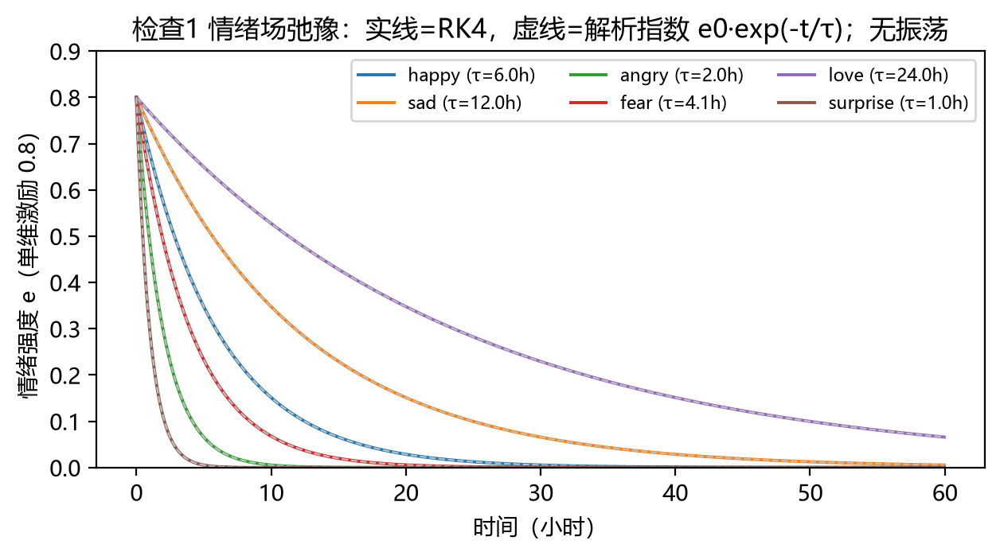
图 B-1 C01 情绪场弛豫：单维激励 vs 解析解（式 4-1）
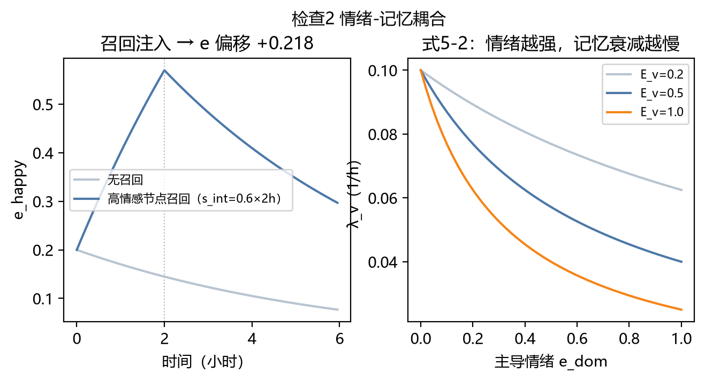
图 B-2 C02 情绪-记忆耦合：召回抬升 e、λ 被压低（式 5-2）
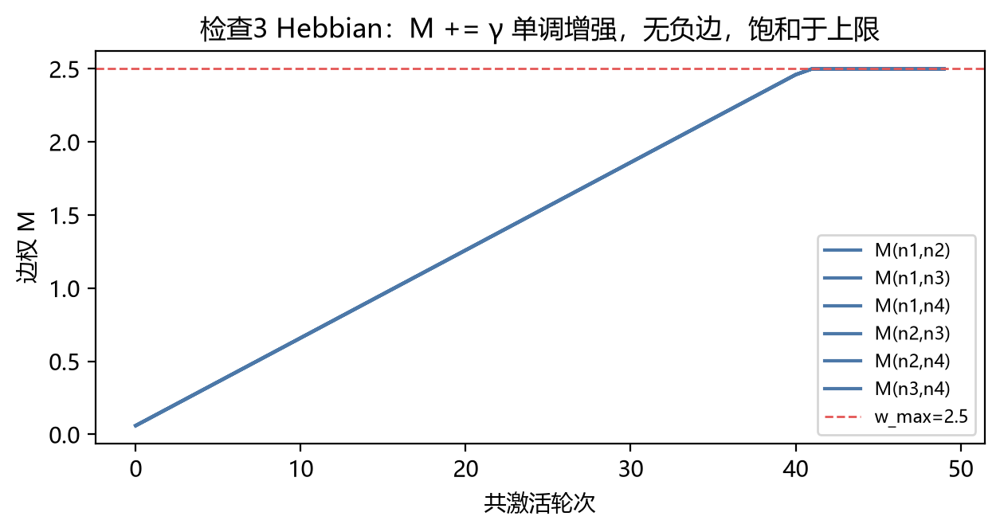
图 B-3 C03 Hebbian 边权单调收敛于 w_max=2.5（式 5-6）
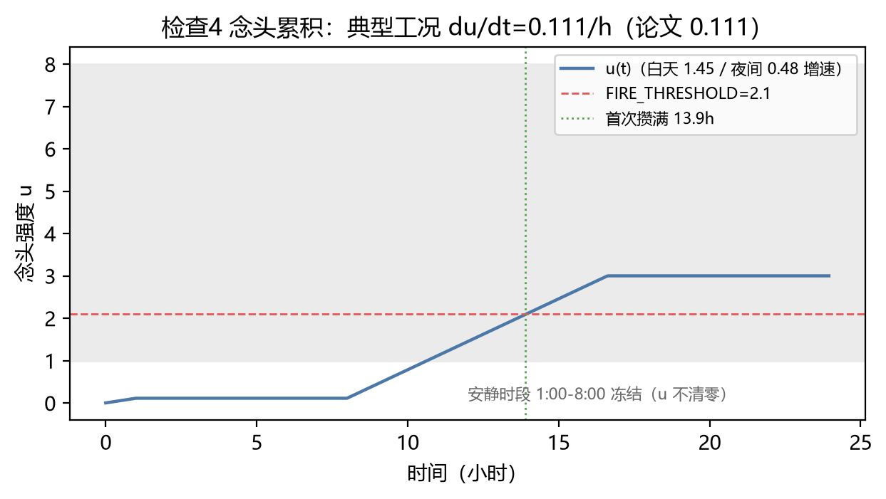
图 B-4 C04 念头线性累积，典型工况 du/dt≈0.111/h（式 7-1）
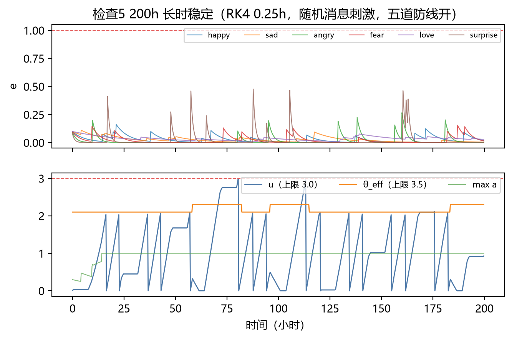
图 B-5 C05 200h 长时稳定：e/u/θ 全程有界
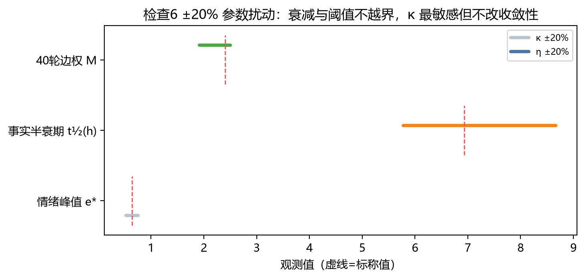
图 B-6 C06 参数 ±20% 扰动：κ 最敏感但不失稳
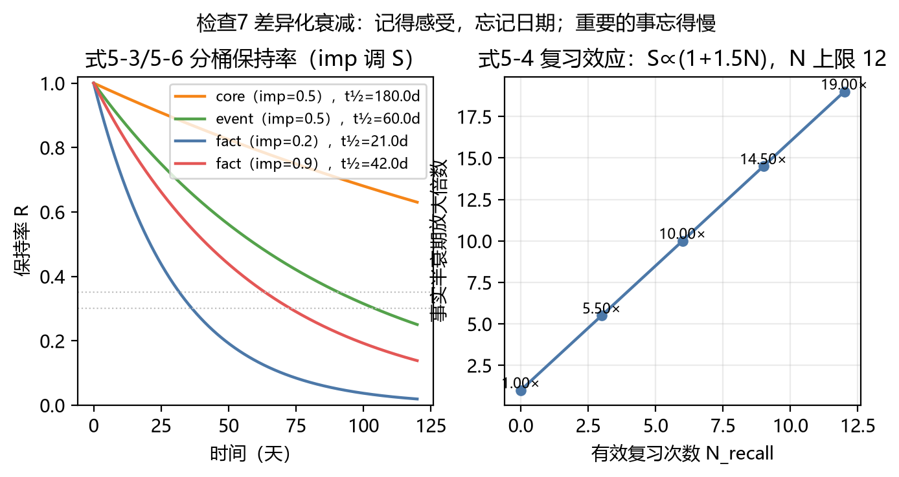
图 B-7 C07 差异化衰减：三桶有效半衰期 21/42/60/180 天，imp 给 2 倍杠杆、复习给 19 倍（式 5-3~5-5）
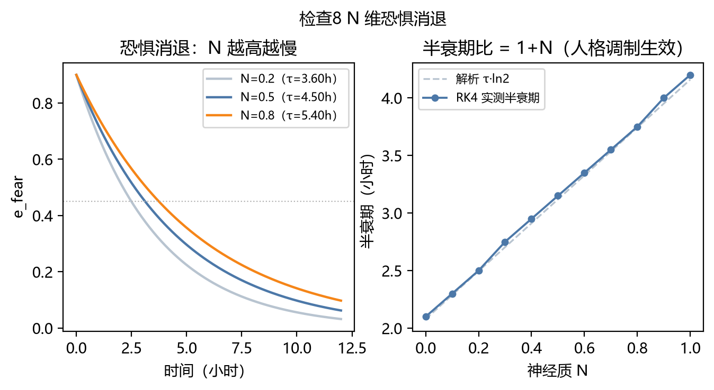
图 B-8 C08 N 维恐惧消退：N=0.8 半衰期延长 1.79 倍（式 4-1 人格调制）
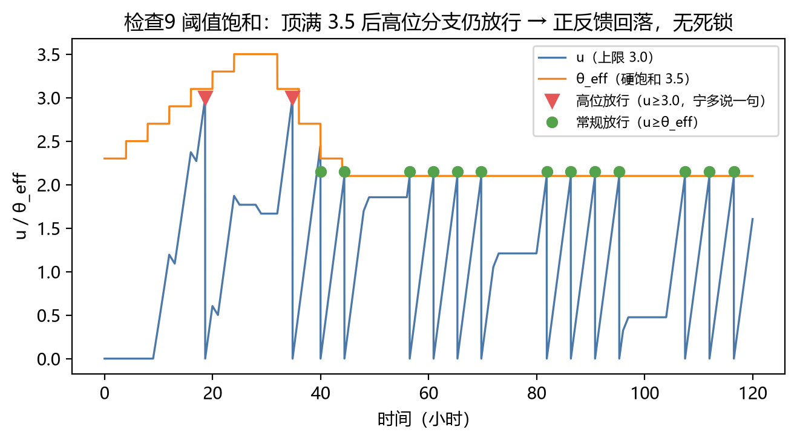
图 B-9 C09 阈值饱和：顶满 3.5 后高位分支仍放行，正反馈回落无死锁
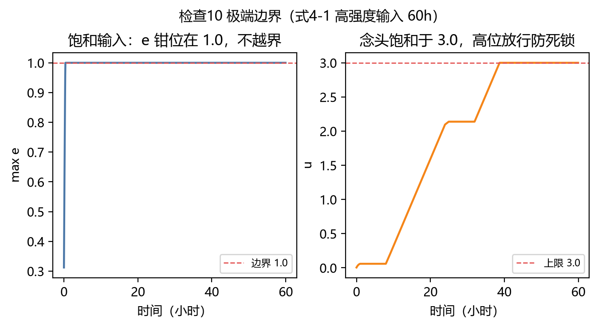
图 B-10 C10 极端边界：60h 饱和输入下 e≤1.0、u≤3.0
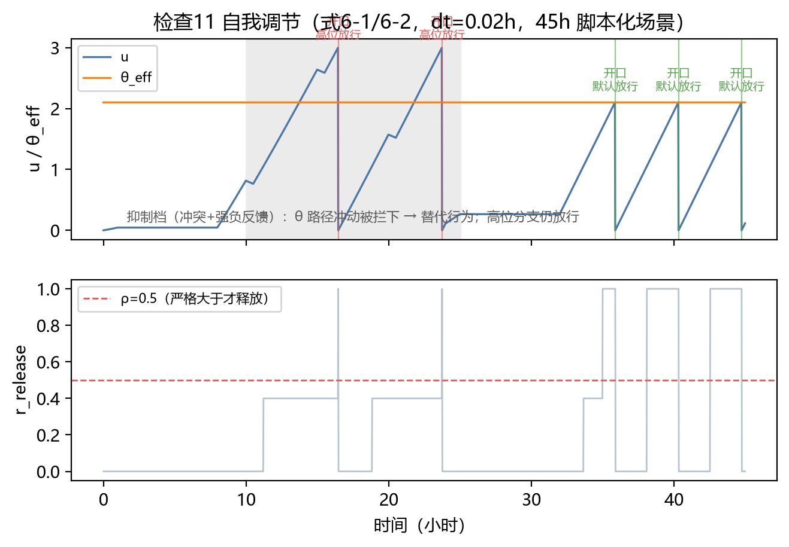
图 B-11 C11 自我调节：抑制期开口违规 0、替代行为 574 次（式 6-1/6-2）
图 B-12 C12 综合故障率对照：1.540 → 0.065（降幅 95.8%）
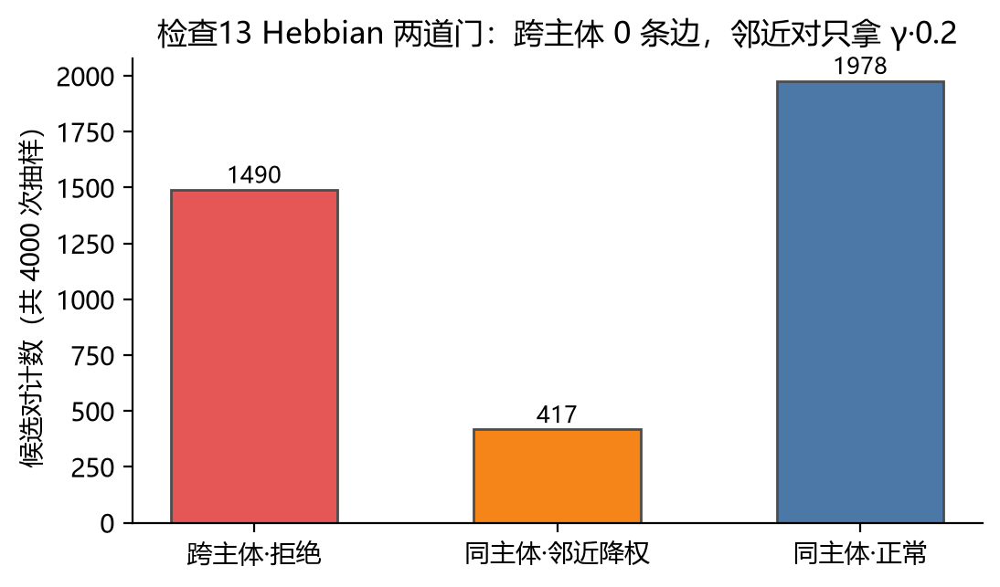
图 B-13 C13 Hebbian 两道门：4000 次抽样中跨主体边 0 条，同主体 24h 内只加 γ·0.2=0.012，远距对 0.06（式 5-6）
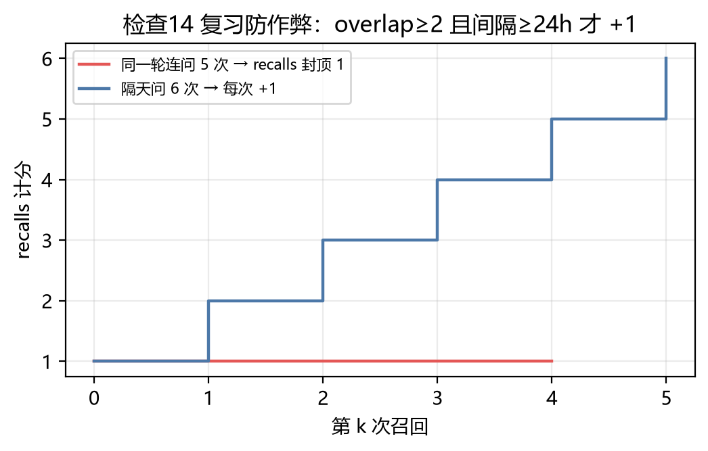
图 B-14 C14 复习防作弊：同一轮连问 5 次只计 1 次，隔天问 6 次计 6 次（式 5-8）
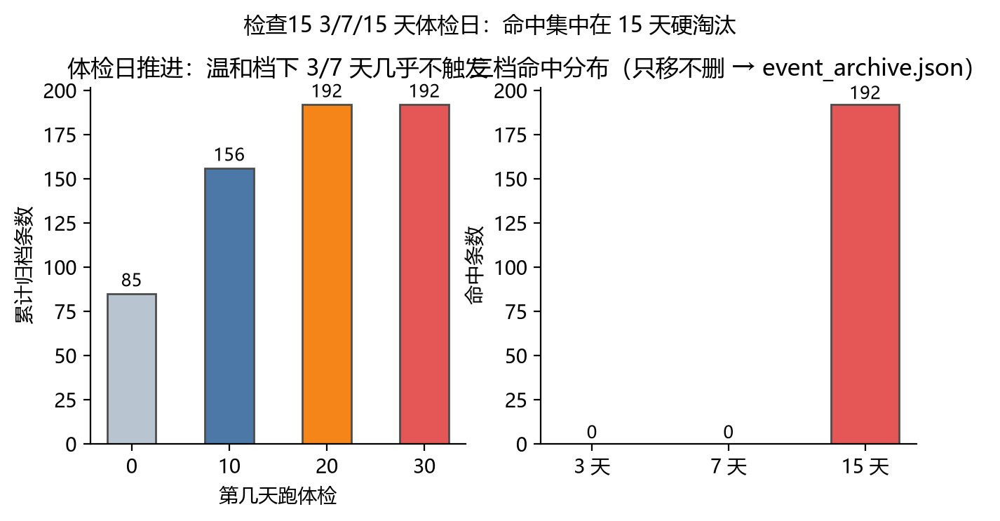
图 B-15 C15 体检日归档：400 条混合库推进 30 天，累计归档 85/156/192/192，三档命中 0/0/192，第 30 天在线 208（式 5-9）
sim/shihai_sim.py 单文件约 1200 行，分五段：
（1）常量区：DIMS/TAU（式 4-1 时间常数）、KAPPA/ETA、LAMBDA_TYPE（图谱节点侧）、 ALPHA_MEM/HALF_LIFE_DAYS/IMP_BETA/STAB_EMO_ALPHA/STAB_RECALL_BETA/STAB_RECALL_MAX （式 5-3~5-5）、GAMMA/THETA_ACT/W_MAX（式 5-6）、RECALL_MIN_OVERLAP/RECALL_MIN_GAP （式 5-8）、SWEEP_DAYS/SWEEP_R（式 5-9）、FIRE_THRESHOLD/URGE_CEILING/ GATE_MAX/STREAK_GATE_STEP（§7）、RHO/LOW_RATIO（§5.10.1），逐项注明对应 正文公式号；（2）解析函数：tau_eff、emo_rhs/emo_rk4（RK4 + 每级投影钳位）、 urge_rhs/urge_rk4、lambda_eff、alpha_from_half_life、stability、lam_mem、 retention、half_life_h、timing_fit、mood_state；（3）MindSim 决策流仿真器：消息泊松流、图谱扩散与 Hebbian 离散映射（衰减项用精确指数 exp(−λ·Δt)）、开口后反馈回路 （回复延迟 ~1.2h）、五道防线开关（guards）、f1–f5 故障计数、替代行为 计数；（4）C01–C15 检查函数（C13 两道门、C14 复习计分、C15 体检日归档）， 每个返回 dict 并落盘 metrics.json；（5） run_all/main：汇总、绘图（matplotlib Agg、Microsoft YaHei）。
运行方式：python sim/shihai_sim.py [--seed N]；依赖仅
numpy 与 matplotlib。随机种子默认 20261110；所有随机流共用同一 MindSim
内 Generator，保证横向可比。
正文方程与实现的对应关系（行号以 2026-11-10 版本为准）：
| 论文条目 * | *实现符号** | 位置 |
|---|---|---|
| 式 4-1 情绪场 | EmotionField.tau_eff/step | emotion.py:73/82 |
| 式 5-2 λ_v(e) | lambda_eff | emotion.py:108 |
| 式 5-3~5-5 保持率 | FactItem.stability/ retention/decay_to | memory_v2.py:167/175/ 182 |
| 式 5-3~5-5 事件侧 | EventItem.stability/ retention/decay_to | memory_v2.py:218/230/ 236 |
| 式 5-1 扩散 | MemoryGraph.activate_and _spread | graph.py:342 |
| 式 5-6 Hebbian | MemoryGraph.hebbian | graph.py:423 |
| 式 5-6 门一/门二 | _sender_of / _born_of | graph.py:458/463 |
| 图谱类型衰减 | MemoryGraph.decay_step | graph.py:473 |
| 梦境修剪 | MemoryGraph.dream | graph.py:491 |
| 式 7-1 念头累积 | UrgeEngine.step | urge.py:75 |
| §7.2 有效阈值 | threshold_effective / should_fire | adapt.py:194 / urge.py:96 |
| 式 6-1/6-2 释放许可 | EgoRegulator.release_ permission/decide | ego.py:85/120 |
| §8 目标演化 | goal_drift | goals.py:16 |
| §9.1 慢参数 | AdaptEngine.on_user_ message/on_silence/q_updat | adapt.py:66/164/184 e |
| §10.2 看门狗 | MindEngine.tick | engine.py:245 |
| §7.3 由头锚点 | MindEngine._anchor_reason | engine.py:425 |
| 式 6-2 替代行为 | MindEngine._ego_intervene | engine.py:325 |
| §13.4 行动记忆 | MindEngine.consume_fired | engine.py:490 |
| 记忆固结提示词（imp 字段） | _COMMIT_PROMPT | memory.py:67 |
| imp 规则兜底 | _mem_rule_imp | memory.py:431 |
| 峰值冻结 | memory_watch | memory.py:224 |
| 异步固结（一次 LLM 产事件+事实+imp） | _mem_commit | memory.py:327 |
| 召回格式化（豁免 通道） | _mem_format_recall | memory.py:725 |
| 记忆衰减常数 α | ALPHA_FACT_NORMAL/CORE/ EVENT（由半衰期 15/90/30 天反算） | memory_v2.py:52–54 |
| 式 5-4 重要度系数 | IMP_BETA=2.0 | memory_v2.py:76 |
| 式 5-4 情绪/复习项 | STAB_EMO_ALPHA=2.0 / STAB_RECALL_BETA=1.5 / STAB_RECALL_MAX=12 | memory_v2.py:83–85 |
| 式 5-8 复习两道闸 | RECALL_MIN_OVERLAP=2 / RECALL_MIN_GAP=24h | memory_v2.py:89–90 |
| 式 5-9 体检日归档 | EventBank.archive_stale | memory_v2.py:428 |
| 事实检索（+0.35·imp 排序） | FactBank.retrieve | memory_v2.py:366 |
| 事件固结（imp 透传 E ） | ventBank.commit | memory_v2.py:504 |
| 召回与批量 boost | MemoryV2.recall | memory_v2.py:669 |
| 时序注入三档 | _mem_tier_quota / _mem_timeline | memory.py:617/633 |
| 注入与相关性闸 | memory_inject | memory.py:446 |
以上 13 个模块（表 18-1）全部通过 py_compile 静态编译；记忆链路修补 （imp 直用、默认 0.0、闸豁免、排序加权、批量落盘、分布日志）已在 2026-11-10 完成离线自检。